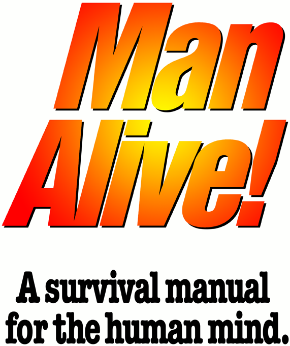

[from selfadoration.com/ManAlive.html]

That headline is my favorite advertising joke, a send-up of all those hokey old matchbook covers. I don’t know if anyone still advertises on matchbook covers. I don’t even know if anyone still makes matchbooks. Presumably, by now, smokers can light their cigarettes with the fire of indignation in other peoples’ eyes.
But I have always believed that ordinary people should be able to save the world from going to hell on a hand-truck. Our problem is not the tyrant-of-the-moment. The only real problem humanity has ever had is thoughtlessness – the mindless acquiescence to the absurd demands of demagogues.
That’s the subject of this little book: The high cost of thoughtlessness – and how to stop paying it. It weighs in at around 75 pages. I’m nobody’s matchbook copywriter, and I would have made it even shorter if I could have. But it covers everything I know about the nature of human life on Earth – what we’ve gotten wrong, until now, and how we can do better going forward.
Why did I bother? Because the world we grew up in is crashing down around our ears. Nothing has collapsed yet, and there is no blood in the streets – so far. But as the economists say, “If something can’t go on forever, it won’t.” My bet is that you have been watching the news and wondering what you will do, if things get ugly.
Doesn’t that seem like a fate worth avoiding? And yet: What can one person do? My answer: Read – and propagate – these ideas. The book itself is offered at no cost – and it always will be. Even so, the price I ask is very high: You have to pay attention.
If you find that you like this book, I encourage you to share it freely, far and wide, in any form, with anyone you choose. Print it, photo-copy it, email it – shout it from the rooftops if you like. You can read it at SelfAdoration.com, or you can download an easy-to-share PDF version. If you post to public forums or you have your own web site or weblog, download the propagation kit.
Why should you bother? Because if anything is going to save civilization from tyranny, it will be ordinary people like us. And there are at least 2.5 billion of us on the internet. Think what a big difference some new ideas could make in that many human lives.
How do you save the world from home in your spare time? One mind at a time...
What a piece of work is a man! How noble in reason! how infinite in faculty! in form, in moving, how express and admirable! in action how like an angel! in apprehension how like a god! the beauty of the world! the paragon of animals!That speech is from Hamlet, of course. Shakespeare, dead four-hundred years, loved your mind much more than does almost anyone alive today. If you read contemporary authors – theologians or philosophers or academics or artists or journalists – they will insist that your reason is either impotent or incompetent, your faculties inept, your simplest movements clumsy and chaotic, your actions and apprehension diabolical, your every attribute a manifestation either of an ugly corruption or of meaningless chance, your very existence an insult to all of existence. You will have to dig through a lot of garbage to find someone who will come right out and say that the universe would be better if the human mind did not exist, but this is the philosophy undergirding modern claims made about humanity.
The culture at large, all over the world, is at war with the human mind – and you don’t know it.
The world you’ve always known is collapsing around you – or has it already collapsed? – and you don’t know why.
Does it occur to you now that those two observations might have something to do with each other?
If we assume that Shakespeare is correct – as Shakespeare’s corpus itself proves! – what might be the objective of all those people hurling insults at your mind? Where might they be hoping to land, as the grand edifices of Western Civilization crumble to rubble? “Cui bono?” – who benefits? The truly awful truth is that no one does. The people lecturing you about how vile you are surely hope to reign over you and to seize your wealth for themselves. But in denigrating the mind they are dismantling the very mechanisms keeping themselves – and you – alive. When we have smothered human reason with bile and invective, all of our lives will be worse – those of us who are lucky enough to stay alive.
But I am not concerned with error, no matter what its motivation. If you read this treatise carefully, I will identify for you a host of egregious philosophical errors, the elucidation of each one of which might be worthy of yet another worthless doctorate degree. But even the most complete catalog of errors will not yield a single useful truth, and an infinite list of vices will not result in even one moment of virtue in your life. I leave error and deception and perversion and spite to the people who love them best. I love the truth and the Splendor I earn only by loving the truth, and I am writing to share with you the essence of my love for the human mind – for your mind.
You’ve been told your whole life that philosophy is hard, too hard for a feeble little mind like yours to apprehend. This is false, and, as you’ll gather as we go along, virtually everything you have been told about the life of the mind is false. Philosophy can be arcane, with lots of big words being tossed around. But most of this is simply a smokescreen: The arguments being propped up by those incomprehensible terms are false – and the philosophers making them know it. They write in an unintelligible jargon in the hope that you will not discover that you are being hustled out of every value your life requires.
This is the truth of your life, concealed from you until now: Each one of us is a philosopher. Most of us, most probably including you, have just been bad at the job. You have surrendered your mind to other people – to theologians or philosophers or academics or artists or journalists – or politicians – and those people have abused your misplaced trust in them. This was villainous on their part, but the error before that one is much worse, and it is no one’s fault but yours: You were a volunteer for your own despoiling. Other people cannot think for you, no matter how much you might wish they could. Take careful note: This includes me. I plan to show you how to do a better job of thinking for yourself, but I can’t think for you, nor would I want to, nor should you want me to.
Here is the most important question in the entire discipline of philosophy, and it is one that you must confront in every moment of your life – in order that you might have a life:
“What should I do?”
That’s the subject matter of the philosophical discipline called ethics, and every professional philosopher will insist that ethics is just a puny little branch of philosophy. What matters, they will declaim, is cosmology (the structure of the universe) or metaphysics (the nature of existence) or epistemology (the theory of knowledge). All of these disciplines, plus many others, are important for building a philosophical system. But why do we build philosophical systems at all? The answer is to be found in the paragraph immediately preceding this one: “What should I do?”
Each individual human being is his own first and best philosopher, like it or don’t, for this simple reason: You are not born knowing how to stay alive, and, absent some sort of cosmic-injustice machine like the Big Mother welfare state, if you don’t figure out what to do – and then do it – you will die. If you do nothing in your own behalf, you will die. If you pursue errors, your own errors or the kind that come with a tony religious or academic pedigree, you will die. If you attempt to exist as an animal does, trying to steal the values you need to survive, you will live in Squalor until one of your would-be victims catches up to you, and then you will die.
What is more, you cannot live the uniquely-human life – the fully-human life – unless you think in your own behalf, in pursuit of your own values. The philosophical or theological doctrine you have followed until now has been aimed, most likely, in the opposite direction: It sought to get you to supplant your own reason with someone else’s dogma, and to pursue that person’s values rather than your own.
Why is Western Civilization collapsing? Because you defaulted on your responsibility to defend it – by defending the values that make your life possible.
But, but, but... We’re all in this together, aren’t we? Wrong. That’s just another hustle, devised to get you to give up everything you have earned so that the person making the claim does not have to earn anything at all. This is the truth of your life, which perhaps no one has ever told you before today:
You’re in this all alone.
You can choose to throw in your lot with a spouse or a friend or your children, but nothing causes or sustains your community except the on-going choices – instantly reversible – of each of the members of that group. And you cannot be a member of any group without your freely-chosen, on-going consent and active participation. And beyond all that, the you that is most fundamentally you is always and necessarily isolated from all other people and all other things. This is a statement of ontology – the philosophy of the factual nature of real things, regardless of what anyone thinks about them. We’ll be coming back to this later, because your fundamental independence from all other people is the most important – and therefore the most deliberately obscured – issue in all of modern philosophy. But for now it suffices to note that other people cannot choose for you for the same reason they cannot think for you – or eat for you: Because you are in this all alone.
I used the word “Splendor” before, and this is a term of art – which means a word I made up. The coinage itself predates my appropriation of it, obviously, but when I capitalize that word, what I mean is a mental state that is possible only to human beings – and “human being” is itself a term of art for me – and only then to human beings who are fully committed to being alive as human beings. I will defend my concept of Splendor as we go along, but for now, if you want a full and fully-captivating experience of the state of mind I aspire to – for you, too, but especially for myself – give your whole mind to the Ode to Joy, the fourth movement of Beethoven’s Ninth Symphony. That is the fully-human life. I am eager to help you understand what has gone wrong in your life and in the world around you. But my full objective is to teach you what I mean by Splendor and how to identify, achieve and sustain it in your own life.
Here’s some very good news: We are not doomed. We have just been very poor philosophers until now. If you will lend me your mind for a while, I will show you how to get much better results from it, now and enduringly.
Everything I have to say about anything starts with carrying the claim back to the object. The essence of philosophical error, deliberate or not, is creative solipsism: “The nature of the thing under discussion is what I need it to be to make my argument work out.” This is useless, of course, since no amount of creative map-making will turn a mountain into a valley. The map is not the territory. If we want to make useful, cogent arguments about what humanity is, we must look to actual human beings, not to incomprehensible maunderings about what humanity “must” be – regardless of the facts.
This is ontology, the study of the nature of real things, irrespective of what anyone thinks about them. And as we will see repeatedly, as we go along, ontology really matters only when we are talking about human beings. There is no one who claims that there is anything controversial about the nature of rocks or trees or reptiles. Only human nature is deployed in one bogus argument after the next, each one devised to induce you to try to violate your own inviolable ontological nature.
There is another big word we need to deal with, so we might as well get it out of the way. Teleology is the branch of philosophy concerned with oughts – what real things should do. Again, it only matters with respect to human beings. A rock should sit around doing nothing until something else acts on it. A tree should grow toward the sun until it is felled by disease or collapses from its own weight. A reptile should eat, mate and moult until it is devoured by a starving bird. These are all non-controversial statements, ultimately of interest only to lab-coated academics.
But ontology and teleology matter a great deal as soon as the conversation turns to human beings. Recall that the most important question in philosophy is, “What (ontology) should (teleology) I (ontology) do (teleology)?” Accordingly, the sole topic of philosophical and theological writing, for all of human history, has been teleology: What should you do? As above, philosophers and theologians will insist that they are concerned with loftier issues, the big picture. This is false. The only thing that matters to human beings is humanity, and the sole purpose of any doctrine – including this one! – is to induce you to change your behavior.
Ontology is being and teleology is shoulding, and, practically speaking, shoulding only matters with respect to human behavior. You can’t “should” a rock into behaving like a reptile, nor a reptile a rock. But you sure can “should” a man into sacrificing everything he is, everything he has and everything he loves for some crack-pot theory – a religion or a philosophy or a political movement. Most of us don’t actually do the things we are “shoulded” about, thank heavens! We’ll give our favorite “thought-leader” – whom we never think to call a crack-pot – an hour or two a week, but then we go back to living a normal life that is largely appropriate to our true human nature – the human nature that our pet crack-pot insists in high dudgeon cannot possibly be what it actually is, and instead can only be what his doctrine commands it “must” be.
It’s funny in the abstract, and just about anyone can have great fun picking apart any ridiculous doctrine but his own. Your own dogma is holy writ, of course, and I don’t plan to take it away from you. If you cannot demonstrate the truth of your arguments by carrying them back to the object – by demonstrating them in reality – I don’t care what you say about human nature or why you behave the way you do. Your claims might actually be true, but if you are unable to defend them in ontology and teleology, they are just so much white noise to me. I accept that your dogma is sacred to you. I also regard it as being undefended – even if you disagree.
That’s your business, in any case. I plan to “should” humanity in the large – to talk about how human beings ought to behave in order to maximize the potential made possible by their ontological nature. But I don’t intend to “should” you – the individual person – too much at all. I don’t want to take from you the ideas you treasure now, I want to give to you the treasures you have never had – but always wanted. I want to show you how the human mind really works, so that you can take full command of it.
So start here: You are an organism. That might seem obvious to you, but a huge number of the critical arguments made against your mind turn on the idea that, since you have a rational, conceptual consciousness, any sort of behavior that reflects your origins as a biological entity is necessarily irrational. We can call this the Spock Fallacy. I think the portrayal of Star Trek’s Mr. Spock himself refutes this claim well enough, but it is one of a type of reductionist fallacies that are constantly being deployed against you: Not only are you damned as being less than the sum of your parts, typically some one part of your nature – blown out of all proportion and distorted out of all recognition – is declared to be a cipher for the whole.
The Determinist Fallacy is a reductionist dodge you will run into all the time, if you are able to identify it under its many thousands of masks. In its most basic form, it seeks to conflate living organisms with inanimate matter: Since atoms and rocks and planets are all governed in their “behavior” by inviolable physical causality, where each event is the unavoidable consequence of prior physical causes, the behavior of organisms must also be causally deterministic. No one knows why organisms are so different from inanimate matter – recall, the rock does nothing on its own – but they are obviously radically different, and conflating the two categories is clearly an error – a very common error. At the atomic or sub-atomic level, the causal events will be similar, but clearly that kind of predictable causal determinism does not scale in the linear fashion the determinists want it to. If you doubt this, push a boulder around for a while. Then go push a mountain lion around in the same way. Your peer-reviewed academic paper on your results just might win a prize – and your picture in the newspaper will be a sight to behold!
You are a particular type of organism, a mammal, and, in consequence, you share many characteristics in common with other mammals. Fish swim, birds fly and snakes slither, but only mammals exhibit the kinds of behaviors we would associate with emotions in human beings. We will talk more about this when we get to the subject of Mothertongue, but it is our mammalian heritage that leads Mr. Spock to so much consternation: It is irrational, goes this argument, that we should spend so much of our time engaging in behaviors – like cuddling or consoling each other or making love – that are both non-conceptual and intellectually or economically unproductive.
Are you sensing a common thread here? Every criticism of human nature consists of the derision of you and your mind for being what they are. As a matter of ontology, you are an organism, and you behave like an organism, not like a rock and not like a robot. You are a mammal, and so you behave like a mammal and not like a reptile or a tree. If any statement I make about your nature as a type of entity does not take into account everything you are as that type of entity, I am making a gross conceptual error: I am conflating the single aspect of your nature that I am focused on with the whole. If the statements I make on that basis are at least factually true – and don’t contradict anything else I know about human nature – I may qualify for a hugely redundant doctorate degree. But if my claims are not true, or if they contradict other aspects of human nature, I am committing the Reductionist Fallacy.
But you are much more than a mammal – and this is why we are having this discussion in the first place. You are capable of conceptual consciousness – sorting the evidence you apprehend with your senses into mental categories – where no other organism is. You are capable of rationality – reasoning in proportion about those categories – where no other organism is. And you are capable of governing your behavior accordingly by informed discretion – by free will – where no other organism is.
You are not bound by nature or physics or the gods to do any of this. In the first place, each one of those capacities had to be cultivated within you – and not by you. And in the second place, there is nothing in the laws of nature that prevents you from devising specious conceptual categories, conflating those categories out of all rational proportion and then resolving to do things you know in advance are contrary to your true nature as an entity. And if you get good enough at documenting that kind of deliberate nonsense, someone might just give you a doctorate degree – in philosophy, no less!
You are a being of rationally-conceptual volitionality – a free moral agent – and in this you are sui generis – a category unto your own. There is nothing like you in mere inanimate matter, and therefore it is a logical fallacy to describe your behavior as nothing more than the manifestation of inviolable physical laws.
Note in this context that all of philosophy assumes the idea of human free will. The stars cannot be persuaded by rhetoric to move in other orbits, and the sands on the beach cannot be wheedled, threatened or flattered into rearranging their distribution. If you are attempting to persuade me of the “truth” of inviolable physical causality as an explanation of human behavior, you are necessarily insisting, simultaneously, that I both can and cannot change my mind by an act of will. Both propositions cannot be true, and your own efforts at persuading me are proof that you yourself do not accept determinism – not the physical determinism addressed above, nor similar claims of a psychological, behavioral, genetic or neuro-chemical determinism – as the cause of human behavior.
That same argument applies to every sort of “must” argument of human nature. Human beings are physical objects, like all organisms, and so they “must” obey laws of nature like the law of gravitation. But to say that any sort of purposive, consciously-chosen human behavior “must” conform to this or that arbitrary law – defended in physics or biology or psychology or philosophy or theology or pure fantasy – is simply false to fact. No one who has raised a child can doubt this proposition. Human will is free of external constraints of all sorts, and just about any teenager will be happy to prove this to you with any act of defiance you choose to induce by forbidding it.
Similarly, because you are a being of rationally-conceptual volitionality, most arguments conflating human behavior with that of other animals are also fallacious. I call the most common form of these claims the Dancing Bear Fallacy: “See the bear dancing to the music! It’s just like us!” No, it is not. A trained animal does what it is trained to do – it knows not what or why – in anticipation of getting a treat. (A clever graduate student might jump up just now to observe that doing tricks for treats is just like having a job – and, no, it is not.) Human beings dance vertically in order to find out if they might want to continue the dance horizontally, later on, in private. The two types of events are nothing alike, and it is a gross error to conflate them.
The general form of the specious appeal – this seems to have certain traits in common with that, therefore this is that – is a comically obvious error when you state it plainly. The people who make these sorts of arguments can’t state anything plainly, of course, so you need to train your mind to unpack their claims. If there are significant differences in kind between the “this” and the “that” – regardless of their seemingly “uncanny” similarities – the argument is most probably deploying the Specious Analogy Fallacy.
As a sort of pocket-reference to the kinds of bogus arguments made about your mind – claims you will see everywhere if you look for them – take note of these three general categories:
1. “We now know we know nothing!” Either your mind is inherently unreliable or the world outside your mind is fundamentally incomprehensible.
2. “Your good behavior is not to your credit, but at least your bad behavior is not your fault!” The actions you think of as being morally good or evil are either causally unavoidable or are caused by something other than your free will – hormones, brain chemistry, genes, brain defects, drugs, diseases, your upbringing, your environment, your wealth or poverty, memes, etc.
3. “Dancing bears are just like us!” Either animals such as apes or dolphins (or even “artificially intelligent” computer programs) are just as smart as you, or you are just as flailingly ignorant as an animal.
Note that all three of these categories are self-consuming: To uphold them, necessarily, is to deny them. If we know we know nothing, then we must know at least that one something – begging the question of how we can know even that little bit of nonsense. If the human will is not free, I cannot will myself to persuade you of this claim – nor even simply to make it – and you cannot will yourself either to accept or reject it. And if your mind works “just like” an animal’s brain, then you cannot discover anything at all about how your mind works, nor record or communicate your findings. Do you doubt me? If so, please have your pet or your software project write a peer-reviewed paper denouncing my egregious intellectual arrogance. No one believes this hogwash. They just want for you to believe it – or at least not dare to challenge it.
But what about denigrations of your mind that are factually true? For example, can adrenaline in your bloodstream temporarily induce you to act out of proportion to your circumstances? Yes. Can pheromones goad you to dance horizontally with someone you should never even have danced with vertically? Yes. Can you make an error of perception in your apprehension of sense evidence, or can you make an error of knowledge in your reasoning about that evidence? Yes. Can you choose unwisely? Oh, yes! – especially when it comes to choosing whom to listen to about the nature of human nature.
You are most fundamentally a being of rationally-conceptual volitionality, but you are everything you are. Your thinking can be influenced by any number of external and internal factors. And your thinking, no matter how carefully you undertake the responsibility of thinking, can be in error. And, worst news of all, you can deliberately induce errors in your thinking, or pretend to, in order to rationalize saying or doing things that you know in advance are wrong – rationally unjustifiable according to your own standard of morality.
Does any of that make you fundamentally wrong? Impotent? Incompetent? Inept? Clumsy and chaotic? Diabolical? Corrupt? A dancing bear cannot actually dance, but it is beyond all doubt perfect in its expression of bearness. Why is so much of modern philosophy devoted to denouncing you for being so perfect, most of the time, in your expression of your humanity? Why is it always you who is flawed, deformed, bungled and botched? Why is your every glory portrayed as an ugly stain? Why would anyone ever create an artifact of the mind insisting that the universe would be a better place without any artifacts of the mind?
I can answer those questions, but I’m not going to. Not here. Not now. The only benefit to be realized from the study of errors is to learn how to correct them and how not to repeat them. Any sort of argument about what the human mind is not is most likely aimed away from your values, not toward them. Your mind is your sole means of survival, and you achieve your values by training your mind to work better and better, not by devising specious rationales for spitting at your mind, your self and your nature as a human being.
I told you I use the words “human being” as a term of art. Here is why: Because there is a valid and valuable distinction to be made between a genetic Homo sapiens (the surviving issue of the recombination of genes) and a human being (a genetic Homo sapiens within whom has been cultivated the gift of mind). A genetic Homo sapiens can have the potential to become a human being – although this capacity or its existential realization can have been damaged or destroyed by disease, injury or birth defect. But until the mind has been cultivated within a particular genetic Homo sapiens, that entity will not be a human being.
A human life is an artifact, a man-made thing. The existence of a genetic Homo sapiens is a manifestation of nature, just as with any tree or reptile or kitten. But the existence of your life as a human being is a consequence of a vast number of conceptually-conscious choices made by your parents and other human beings when you were just a baby. Had they failed to cultivate the gift of mind within you, you might have survived as a genetic Homo sapiens, but you would never have become a human being. You owe your biological life to nature, but you owe your life as a human being to choices made by other human beings.
It’s funny for me to listen to abortion ideologues, pro and con, argue about when human life begins: Conception or birth? The truth – as a matter of ontological fact – is that, for normal children raised in normal circumstances, human life begins at age four or five. The transition from toddler to child is slow and gradual, but the distinction is obvious once you know what to look for. A toddler is little more than a very smart dumb animal – an exceptionally talented dancing bear. He does amazing things, compared to the clumsy efforts of trained animals, but like a trained animal, he does not understand conceptually what he is doing or why. A child, by contrast, is a small and relatively inexperienced human being. He thinks in concepts, and he can name the reason for everything he does.
And that’s the bright-line distinction, of course: Thinking and choosing in concepts. Mammals have sense organs, obviously, and they can perceive the world around them. They can recollect some of their perceptions at some level of organization, and they can even draw crude inferences about those perceptions – pattern matching. They can communicate by bodily signaling. They can want, make no doubt, and they can pursue their wants quite willfully. What they cannot do is collect their perceptions into conceptual categories, reason proportionately about those categories and make informed choices on the basis of that reasoning. No mere animal can do this, no matter what breathless claims are made for its “uncanny” Dancing Bear behaviors.
That kind of cognition – rationally-conceptual volitionality – is found only in human beings – only in a normal genetic Homo sapiens child or adult within whom the gift of mind has been cultivated – by the repeated, persistent, fully-conceptually-conscious choices of the adult human beings who raised that child. If you’re like me, you never thank your parents enough for all the gifts they gave you when you were growing up, but your humanity itself is the greatest treasure they conferred upon you – and I expect they didn’t even think twice about that, at the time they were doing it.
Mainly, they cultivated your potential simply by delighting in it. You learned motor skills by playing “patty-cake,” and you learned to speak – in a sort of verbal semaphore, at first – by being spoken to. You learned to categorize by sorting among the many toys they gave you, and you taught yourself the laws of identity and causality by playing with those toys – taking the same simple actions over and over again and observing the results. You learned to think subjunctively – to think about things not immediately in evidence – by playing “peek-a-boo” and “which-hand.” This exploration of the subjunctive was honed by a hundred-dozen lectures about bad behavior from your parents and other adults: “Would you like it if little Tommy took your toy?” You came to be a human being by being raised as a human being by human beings. Your capacity for a human level of cognition was natural, in-born – a function of that great big brain in your cranium, the brain that, not-coincidentally, no other kind of organism possesses. But the cultivation of that capacity was the product of thousands of choices made by your parents in the process of bringing you up.
I said you learned to speak in “a sort of verbal semaphore,” at first, and this is also an important distinction. One of the things that protects humanity from all of the philosophers and academics who insist that we are nothing special is the power of speech. Not speech deployed to argue against them; for the most part we are intimidated by their pedigrees and their supercilious posturing. But the power of speech itself defends us, because each one of us can easily see that this is a power that human beings alone possess. Lab-coated academics never stop trying to convince us that chimpanzees or dolphins share the power of speech with us, but regardless of what we say – or don’t dare say – in rebuttal, most of us recognize that these claims are absurd.
That’s just more of the Dancing Bear Fallacy, of course, but it is worth listening to the people who make these arguments – and to the people who chortle their support for them. A laboratory dolphin possessed of rationally-conceptual volitionality would immediately file a lawsuit seeking manumission from the clipboard-wielding sadists holding it captive. Ten thousand chimpanzees sitting at computer keyboards cannot produce the works of Shakespeare, nor even one line of intelligible verse. Not ten thousand, not ten million, not ten billion. The purpose of making these nonsensical claims about the specious verbal abilities of trained animals is not to confer an unearned status on those animals, but to rob you of the status you earned by mastering your mind. Animals cannot make informed choices by reasoning about concepts – nor do they need to. They are perfect the way they are – and so are you.
The goal of modern philosophy – in all probability unknown to you and to the scientific researchers who make these breathless claims about the imaginary conceptual abilities of animals – is to undermine the mind. Slavishly following those knowing philosophers of mindlessness, there are vast cadres of very well paid professional butterfly collectors whose job it is to make tautologically obvious observations about animal behavior in the most exaggerated ways they can. And slavishly following them are hordes of popularizers – journalists and artists and so-called “thought leaders” – whose passion is to blow those exaggerated claims even further out of proportion. And, sad to say, at the tag end of that long slavish train, there are a great many ordinary people who hate the human mind enough to seek any bogus evidence of its impotence, its incompetence, its fundamental ugly corruption. I told you the world is at war with your mind. This is how that war is fought.
So let’s talk about what the power of human speech really is – and why it is so different from the bodily signaling we observe in animals. I can’t promise you that you won’t get fooled again, but at least you won’t be stuck trying to defend your mind unarmed.
What’s the difference between “a sort of verbal semaphore” in a toddler and true human speech in a child? Simply everything. Animals communicate by bodily signaling. They don’t know why they communicate. They do everything they do because that’s the way they do things, and they cannot change, add to or improve their in-born signaling ability. Whether the signal is a bee’s flight patterns, a dog’s wagging tail or a chimpanzee’s chest puffed out to express a territorial belligerence, the behavior is a semaphore, a cipher, with no underlying conceptual content.
I call that kind of communication Mothertongue, and all higher animals do it – including us. When you sing a lullaby to an infant, that baby cannot possibly understand the words you are singing. But he can understand the Mothertongue component of your message – the love, the care, the comforting – and he can respond in kind, also in Mothertongue, by smiling and cooing back at you. You and your spouse can do this, too – kiss and cuddle and coo – and very probably the best of the communication that flows between you is carried on without words. We express joy and pride and anger and impatience and every other emotion in Mothertongue, and we can drive each other completely crazy by saying one thing in words while communicating the exact opposite position in Mothertongue.
When a toddler first learns to use words to communicate, he is not at that point communicating concepts. The words he masters are just new signals to him, new semaphores, more precise versions of the laughing and crying and smiling and grimacing he has been using to communicate since birth. Gradually, over time, the toddler will come to understand that a word can subsume any number of instances of the type of object or idea it denotes, some immediately obvious, some not presently in evidence and some purely imaginary. This is the birth of Fathertongue in the toddler’s mind, and the acquisition of Fathertongue is the point of graduation from a largely-animalistic toddlerhood to a fully-human childhood.
In the broadest possible scope, Fathertongue is any notation system – codified memories, speech, written language, mathematical symbols, musical notation, choreography, drawing and painting, computer software languages, etc. – any system by which a human being seeks to retain and communicate complex conceptual information. Mothertongue is active, immediate, visceral and fleeting, where Fathertongue is generally passive, patient, cerebral and enduring. The world of sense experience can be cluttered and chaotic, and the mind itself is much too good at wandering off on meaningless tangets. Fathertongue is the means by which the mind focuses itself, the means by which it hangs onto matters of importance while shedding itself of everything that does not matter.
That’s important. We have been talking about communication, but Fathertongue is about thinking first and always. Even in isolation – stranded on a desert island – you would still have to retain your thoughts to survive, even though there is no one present with whom to communicate those thoughts. Which berries are tasty and which make you sick? If you don’t make an effort to recollect your past experiences, you are as much at risk as any dog of eating bad food – without the dog’s built-in easy-regurgitation system.
As an aside, the terms Mothertongue and Fathertongue are not sex-role related. Thoreau used these coinages, originally, in a very different way. To him a mothertongue was the kind of language Heinlein would have called a “milk tongue” – the locally-prevalent language of casual discourse, like English or Spanish, that you learn first at your mother’s teats. Thoreau contrasted this with the fathertongue languages – Latin and Greek – you would later learn as a part of your formal education.
My own usage of these terms is different. Every notation-based system of recording, preserving and communicating human cognition – memory, speech, poetry, prose, math, music, the visual arts, choreography, software – is Fathertongue in my formulation. Fathertongue can be communicated at a distance, across time, without any direct contact between the communicants, to anyone already versed in the notation system – and to no one who is not. Every sort of communication that can be carried out without formal notation – even if a notation system is used for convenience – is Mothertongue. When you sing to an infant, the words you sing mean nothing to the baby, but the embrace and the warmth and the comfort and the caressing and the sounds of your singing mean everything.
Fathertongue is the means by which human beings collect and organize our perceptions into concepts, and, stripped to its essence, Fathertongue is the means, mode and method of conceptualization. We devise notation systems – words and images and sounds and symbols – so that we might share our concepts with one another, transmitting them across the room, across the globe, across millennia, thus massively increasing our knowledge base. But you cannot denote and communicate what you have not first abstracted in the silence and solitude of your own mind. Fathertongue is the means by which you organize your thoughts so well that you can understand, retain and communicate them.
Dogs bark and dolphins chitter, but only human beings are possessed of the power of Fathertongue, and for this reason among many others, it is inappropriate to compare the mental functioning of animals to the conceptual prowess of human beings. Philosophers and academics can do this if they choose to, but they will be introducing obvious, palpable, outrageous errors into their arguments. And now you know how to identify those errors – and how to defend your mind from them.
That chapter heading is really just a tease. What’s the most important invention ever devised by the mind of man?
Fathertongue, of course. All other inventions flow from it. Without it, we are badly-adapted hairless apes, ultimately doomed to an ignominious extinction. With it, human beings danced on the Moon.
In the last chapter, I raised the idea of your being stranded on a desert island. That’s a hugely unlikely scenario, but it’s interesting to think about because everything that is true of you, as a type of entity, is true of you in isolation. You’re in this all alone, recall, and there is no factual statement that we can make about your nature as a human being that is not true of you even – especially! – when you are isolated from all other people.
In later chapters, we will take up the implications of your fundamental ontological solitude. For now I want to focus on the existential solitude of being stranded. Is there anyone for you to talk to? To cuddle up to? To fight against or to make love with? No. You possess everything you were able to recover from your plane crash or your shipwreck, but there is no one else with you, and anything else you might want you will have to provide for yourself – if you can – or else do without.
But cheer up, Bunkie! You don’t have a knife, but you know that knives exist, and you can apply yourself to making one. It may turn out to be a crude thing compared to the knives you can buy in a store, but close enough is good enough. You don’t have a calendar to keep track of time, but you can easily make one with stones or sticks. With but a few exceptions, you don’t have any of the artifacts we take for granted in Western Civilization, but you have owned a great many of those tools and toys in your time, and you can recreate some of them as you wait to be rescued. You are poor in practical technology, but you are infinitely rich in technological knowledge.
Why is that so? Because of Fathertongue. We stand on the shoulders of giants. To say the truth, mostly we lounge on the shoulders of giants, but even the least and the laziest of us carries within his mind vast stores of accumulated human knowledge. You may not know how to make everything you have ever owned or used or seen or heard about, but you know that those things exist, and you know what purposes they are intended to serve. Even if you are an electrical engineer by trade, you will not be able to make a computer, but you can craft a make-shift abacus with hand-spun twine and dried berries. Lo-tech don’t mean no-tech.
That’s a wondrous thing, that you know so much, at least in a general way, that you did not have to discover on your own. You may not need it every day of your isolation, but you know a ton of math, enough to keep yourself busy – and enough to triangulate on the stars, perhaps, to determine your approximate location. You know dozens of songs and poems to keep yourself amused as you pass the time, and, if you are very clever, you may be able to craft the tools needed to keep a journal. You know how to build a shelter for yourself, and how to plant a garden. You may not lead a prosperous life, stuck there all alone, but you know a lot about how to provide for yourself.
Are you gloating now at all those philosophers, theologians, academics, artists, journalists and other so-called “thought leaders” who have told you all your life how insignificant your mind is, how incompetent it is to solve the problem of survival? Gloat away, but do recall that virtually everything you know about the world outside your mind was discovered by someone else, and you know all of these amazing things not because you abstracted them yourself but because you were lucky enough to absorb them in the concentrated form of Fathertongue.
So let’s complicate the scenario just a little bit. Suppose you incurred a head injury in the catastrophe that led to your being stranded. You are alive, hale and healthy, but you have suffered a complete amnesia of everything you ever learned in Fathertongue. You know how to walk and how to eliminate bodily wastes without soiling yourself, because you mastered those skills while you were still a toddler, before you had learned to think in Fathertongue. You know how to babble in vocal signals that usually produce results – but there is no one to babble to. You know how to sit and play until you get hungry, and you know how to feed yourself – once someone has put a plate of food in front of you.
Actual amnesia does not work this way, of course, but how do you think you would you fare, as an over-sized toddler on a desert island? Would you be able to provide yourself with food and shelter and amusements? Would you be able to document your experience, either to share with others when you are rescued, or at least to leave behind you as a record if rescue should come too late? Would you be phlegmatic about your fate, meeting each new challenge with grit and determination? Or would you just bawl yourself into a state of lathered exhaustion and then perish in a few hours or a few days from dehydration or starvation?
Now take a moment to consider the life of the man who may have been the greatest genius who ever lived, the man who invented Fathertongue – and managed to hang onto it for the rest of us.
We are ascended from brachiators, from tree-swinging apes who fed themselves on leaves. For some reason – drought or disease or wildfires – the leaf supply of our genetic forebears dried up, and they were thrust out onto the savannah with no in-born means of survival. Any other species would have gone extinct, but somehow the hominids who ultimately became Homo sapiens managed to survive. Was their salvation Fathertongue or simply better and better mammalian pattern-matching – or did the one lead to the other?
It is plausible to me that Fathertongue was invented again and again when our species was young. At first, it might have just been one nascent human being at a time, recognizing a commonality among the patterns he and his companions relied on for their survival. Those brief flickerings of the flame of reason could have been blown out again and again. Fathertongue is thinking first, and these brilliant individuals might not have figured out how to communicate the concepts they had discovered.
But then by an effort of emphatic demonstration, one of them might have worked out how to share his knowledge with his mate or his child or his friend. But even then, life might have been so hard that the light of the mind might have been extinguished with the deaths of those few individuals – perhaps dozens of times. At some point, though, some of our hominid ancestors got to be so good at transmitting Fathertongue to one another that it was able to survive from one generation to the next, to be spread to other people and to other lands. But who can know how many times Fathertongue had to be invented before human beings could survive and thrive on the Earth?
I am writing a survival manual for the human mind for two reasons:
First, I want for you to learn how to live up to all those astounding geniuses who strode the Earth before you, starting with the unknown giant of a man who passed Fathertongue down to you, by concatenation, one mind at a time, all the way from the misty depths of antiquity. I want for you to learn to love your mind as he did his, and I want for you to learn how to defend the gift of mind from all of its many determined enemies.
And second, I want to make sure that the flame of reason is never blown out again. We have been fools, and we have entrusted our minds to villains. This was a grievous error, and we will suffer, for a while, for our sins and our mistakes. But we were born not to swing from trees and not to grub around on the veldt, not to bawl away our lives until we starve in Squalor, not to grovel, not to beg and not to perish. We were born to thrive as no creature before us has ever managed to thrive – in comfort, in style and in Splendor. Fathertongue is how we do that, and if it is not worth fighting for, then nothing is.
When the subject of love and sex come up, our friends in the lab coats have a field day. For one thing, gibbons and other critters pair-bond for life, so they’re “just like us.” And for another, when you’re in the thrall of your best-beloved, your brain is all but drowning in pheromones and oxytocin and a mad obsession to rut yourself raw, so you’re no different from a house-cat in heat. Everything they have to say about you omits the inconvenient fact of Fathertongue, which makes their comparisons specious and invalid. However, as a consolation to deluded butterfly collectors everywhere, a genetic Homo sapiens without Fathertongue really is just like a poorly-adapted animal.
But since no mere animal can think in Fathertongue, no members of the animal kingdom bother to study the dating and mating habits of professors and graduate students – a fact that might raise a question in the minds of those assiduous researchers, if they were of a mind to question their contra-factual prejudices. A plausible meta-goal of reductionist science, arguably unknown to the scientists but presumably very well understood by modern philosophers, is to reduce everything to nothing – to trivialize everything in order to trivialize the human mind.
It can be useful to judge intellectual causes by their observed effects, and it is certainly the case that the study of humanity in the modern epoch has robbed you of the desire to learn more about your own nature. You see summaries of allegedly unassailable scientific studies “proving” either that your mind is no better than an animal’s brain or that animals are every bit as wise and capable as you and – instead of standing up for your identity as a member of the only conceptually-conscious species in existence – you wince and turn the page. By that means, their error, knowing or not, becomes your error – an error I am working very hard to correct.
And while the subject of romantic love and sex is so interesting to me that I’m taking it up separately in another treatise, there is a love-before-all-other-loves in your life, one you have probably never thought about at all – and one you will never, ever hear about from theologians, philosophers, academics, artists, journalists or other “thought leaders.” Yes, you love your spouse romantically and erotically. And you love your spouse, your children, your parents, your siblings and the closest of your friends with a storgic love, the enduring love of families. But there is a love in your life that precedes all those loves, and, without it, no other love is possible.
What is it? Your love for your self, of course.
Or maybe not “of course.” I am writing about being – ontology – but philosophers and theologians and everyone who follows their lead are all about shoulding – teleology. And the emphatic shoulding that undergirds every putative argument of being, going back forever, is that you should never, ever love your self. To the contrary, the love of the self is held to be the ultimate evil in almost every philosophical or theological doctrine ever devised in all of human history. The most important question in philosophy is “What should I do?” but, in fact, virtually all dogmas have concerned themselves primarily with what you should not do – and what you most emphatically should not do is love your self.
Are you feeling a little stirred up just now? Queasy in the bowels, maybe, or a little hot under the collar? All you are doing is reading. If you are having an averse emotional reaction to the words you are reading, this is an evidence of the success of your lifelong indoctrination. My take is that the people who taught you to have bodily reactions to ideas are not your friends. By means of fallacious, underhanded appeals to your emotions – starting when you were much too young to identify intellectual dishonesty – they indoctrinated you against your self. They taught you to make war on your own life.
And guess what? It worked. The indoctrination “took” – with tragic results. You are attending to these words, perhaps against your better judgment, because the world you thought you understood is falling apart. And it is falling apart because the philosophies that have guided human civilization for all of human history are perverse – all of them are perverse. And in the modern world, when you scale perversion up to the size of the whole globe, you get global perversion. For the entire history of human life on Earth, theologians, philosophers, academics, artists, journalists, politicians and other so-called “thought leaders” have commanded you to betray your own interests in the service of any interest other than your own.
Guess what? It worked. Your life is wrecked, or close to it. Your family life has been destroyed or badly damaged. Your finances are in ruins. You spend huge amounts of your time hoping and praying that you and the people you love are not living on the cusp of a new Dark Age. This is philosophy in action. This is the awesome power of perverse ideas, if they are spread widely enough. Meanwhile, your despoilers – all those theologians, philosophers, academics, artists, journalists, politicians, government functionaries and other so-called “thought leaders” – are living the high-life at your expense. Their homes are gorgeous and their families are intact. Their finances could not be better, thanks to your generous donations and tax payments. They, too, are pretty sure dark days are ahead of us – so they’re snagging onto more and more wealth, as fast as they can. But while they might seem to “have it all,” in reality they are even more miserable than you are. That’s why they drink so much.
But guess what? None of this matters, except for what we can learn from it. The past cannot be changed. Those so-called “thought leaders” misled you, and you were more than happy to be misled. But the future is the only thing subject to change. You have been wrong – badly, madly, outrageously wrong – but there is no benefit to you in chastising yourself for your past errors. All you can do in the service of your values is learn from your mistakes, put matters right to the extent that you can, and then do better going forward. My job is to help you learn how to do better.
Start here: All human thought occurs in Fathertongue – in words or other man-made symbols – and therefore all human thought consists of the mental manipulation of concepts – ideas. The ideas you hold inside your mind will be organized into a hierarchy of importance – importance to you, not to some imaginary arbiter of canonical importance – which, of course, will change over time. To a young boy, the idea of playing with toys matters a lot more, to him, than the idea of socializing with girls – a circumstance that will change dramatically in due course. We act upon our ideas iteratively, by thinking about them, and, in obvious consequence, the ideas that matter to you the most are the ones you think about the most.
So which one of your ideas do you think about far more than any other?
It’s your self. You may never have thought of your self as an idea before, but that’s what it is. Your self is your own internally-abstracted concept of your life, and there is a sense in which every idea you might consider is a manifestation of your self. Your body is your self’s personal, private puppet, and every purposive, voluntary action you take is an expression of your self: “This is what I do.” “This is how I behave.” “This is how I express mastery of this task.” “This is how I display indifference to this other chore.” “This is how I dance with my cousin.” “This is how I dance with the person I hope to marry.”
But even though we usually think of the body when we use the word “self” (as in, “I wash myself”), because of Fathertongue your physical body is in fact simply an extension of your self. The you that is the real you, most fundamentally, is the idea of your self that you hold in your mind. Everything you do with your body – with your hands or your feet, with your voice and your vocal intonations, with your facial expressions, with your stride or your posture or your gestures – each one of those actions is actually a secondary consequence of the mental actions you are taking upon your self in the silence and solitude of your mind. Those behaviors we call a person’s mien or manner or style or character are simply the automated, habituated expressions of that person’s idea of his self.
Every purposive action – every consciously-chosen action – you take in your life is taken first by the self upon the self. By an overwhelming majority, most of the purposive actions you will take in your life will be taken only upon the self – with no externally-observable secondary consequences of any sort. This is the mental process called introspection, but it is an error to think of introspection as being simply a matter of rumination, wool-gathering, void of all consequences. To the contrary, every thought you have either enhances or diminishes the idea of your life that is your self. Every action you take with your body is deeply meaningful, since much of your notion of who you are will come from your having seen who you have been in your actions. But even actions you don’t take – such as thinking about doing the right thing but ultimately not doing it – will have permanent consequences for your self.
We’ve been talking for quite a while now about human nature, so it might make sense for me, by now, to define the nature of human life.
So: Your life as a fully-conscious human being, most fundamentally, is your awareness of your life as a fully-conscious human.
You have a body, including your brain, and not only does it resemble in some ways the bodies of other organisms, it is also influenced in important ways by the same sorts of internal and external goads that influence the behavior of other organisms. But because you mastered Fathertongue as a child, you are a being of rationally-conceptual volitionality, and because of that critical, insuperable, bright-line distinction, your life is nothing like that of other living things. Non-human organisms do what they do because this is how they are made, and they cannot voluntarily deviate from their in-born nature in any way – nor even conceive of that nature.
But your own life is the product of nothing but your conceptions. Your experience of your life in real time can have bodily manifestations and consequences, but it is your awareness of that experience that matters to you. I used to say that your life as a human being consists of your awareness of your experience of being alive right now, your memories of past experiences and your anticipation of future experiences. I would expand that description now to include your awareness of actions you might have or should have taken in the past, but did not, as well as empty dreams you indulge about your future, knowing all the while that you will never follow through on them. All of these ideas are the substance of your self, and the self is the essential characteristic of the uniquely-human life.
What’s the purpose of life? Scruffy, bearded teenagers of all ages have been asking that question for thousands of years, and each one of them has come up with an answer even more ludicrous than the absurd prescription put forth by the previous nitwit. But here is the full answer to that age-old question:
The purpose of human life is self-expression.
The purpose of every organism’s life is to be lived, and since your own life, most fundamentally, is the life of your self, the purpose of your life is to make your self manifest in every way you can. This is a matter of ontology – of being. It sounds like shoulding – teleology – but in fact this is what you are regardless of what you or anyone else might say about human nature. Every purposive action you take is taken first by the self upon the self, and this is the unavoidable consequence of your having come to be a self. You didn’t cause this to happen – your parents did – and you could not have stopped the process even if you had known it was happening. Only a mind already possessed of Fathertongue could even conceive of the possibility of preventing the cultivation of Fathertongue in any human mind.
You are a self as a matter of inescapable ontology. The effect was caused by volition, by choice, by an iterative shoulding process initiated by your parents. And of course it can be terminated – by your death or by a serious head injury. But the fact that you are a self is a fact of being, not a behavior to be caused or prevented by shoulding. While you are a self, you cannot not be a self. You can pretend you are not a self, albeit not as deceptively as you can pretend your house-cat is a vegan by feeding it nothing but spinach. But you are a self by no choice of your own, and you cannot stop being a self by any act of volition short of bodily self-destruction.
This is what you are, regardless of what anyone says about it. It can be worth your while to read all of those descriptions of your nature promulgated by theologians and philosophers and academics and artists and journalists. They don’t have very much to do with your true nature, do they? Why do you suppose that might be so?
Everything I have described to you is clear and obvious on its face, really just thoroughgoing elaborations on common sense. Truly, there is nothing I have to say that is not plainly obvious to any five-year-old child newly graced with the power of Fathertongue. I can express the truth of human life in greater depth than he can, with greater precision. But there is nothing I know that he did not come to understand well-enough in that scales-falling-from-the-eyes epiphany that is the birth of Fathertongue within an individual human mind.
But don’t stop reading yet. There’s much more to be covered. Take note that we have talked about nothing but being so far, even though I told you at the outset that the most important question in philosophy is “What should I do?”
So what should you do – to make the most and the best of your one, irreplaceable, finite, uniquely-human life?
That’s easy: Love your self.
The name philosophers give to any ethical doctrine promoting self-love or self-interest is egoism. I use that term myself to describe the system of ethics I am elaborating here, but I’m not crazy about it.
First, most creeds that call themselves egoism actually refer to invalid ideas of the self whose interests are to be served. Either “self” is used to mean the reflexive idea of the bodily self or to self-identity – the object of sentences like “I clothe myself” or “I promote myself on the internet.” Or “self” is deployed as a matter of bodily or pecuniary utility: “It was to my self-interest to take a loss on this one deal in order to hang onto a valuable client.” There is nothing wrong with any of these behaviors, they just don’t have anything to do with the actual human self, the self as we documented it in the last chapter.
The second type of ethical creeds called egoism is actually other-centric. Whether the philosopher claims that his egoism permits him to dominate other people, or that his egoism forbids other people from dominating him, the focus of the doctrine is not the self at all – not the self as I describe it nor even the reflexive or utilitarian self – but is instead those other people.
I’m inclined to think that most philosophical or theological arguments – of all sorts – are essentially Cargo Cults: The doctrine in all its interminable, incomprehensible verbiage exists to justify some desired end-state goal the proponent had already upheld in advance of writing his supposed defense of that “inevitable” outcome. The theorist works backwards, from the conclusion to the allegedly-validating premises and evidence, tying everything up with a tidy rhetorical bow. This is completely invalid as a matter of method, of course, since the map is not the territory. It is simply absurd, when you cut through all the fog, for the champion of some doctrine to insist that human nature is what his theory commands that it “must” be. If you tell me these folks are deliberately fooling themselves, I will happily agree with you. My concern is that they do not fool you.
And invalid arguments of egoism are really the least of my concerns. Virtually all ethical arguments are anti-egoistic – anti-self. They are focused, despite their outward differences and despite their outsized meta- or extra-ethical claims, on inducing you to renounce your own values and interests – to the benefit of the theorist and his gang. We owe Fathertongue to one incomparable genius who not only abstracted the first of the ideas that ultimately became rationally-conceptual volitionality but managed to propagate the idea of abstracting ideas widely enough that it has survived to the modern day. But Fathertongue is the language of elaborate lies as well as elaborate truths, and it cannot have been very long thereafter that some pre-historic Eric Cartman figured out how to flatter and wheedle and threaten his brothermen into surrendering their values to him unearned.
We like to think of human history as a clash of great men, their hair flowing in the breeze, their muscles rippling, their eyes fixed firmly on the horizon. In reality, virtually all of the so-called great leaders of history were just like our fearless leaders in the present day: Chiseling, conniving, endlessly grasping grafters, each one striving with all his crafty cunning to go one-up in the sleaziest possible way on all the others. We celebrate and revere the most successful career criminals of each human epoch, and we forget entirely the brilliant minds who actually produced all the riches we take for granted.
Still worse, we fail to note that each one of those renowned thugs was backed up by a scheming little shaman, a full-time professional rationalizer of evil, whose job it was to tell the same transparent lies to the boss thug and his henchmen over and over again, to assure them, again and again, that their actions were righteous because they so obviously were not, to keep them from drowning in the liquor they had to swill to quiet the cognitive dissonance within their own minds. That shaman – first a high-priest, later a theologian, still later a philosopher – was also tasked with the vitally important job of gulling fools into believing that a brute like Alexander the “Great” was a greater benefactor to humanity than a genius like Socrates. Just about everything you know of human history is a testament to the success of that shaman and his intellectual heirs.
Your values are inverted, and I can demonstrate this with an example very close to home. For your whole life you have been told – and you have probably believed – that the United States Constitution is a grand and noble document that exists to safeguard your liberty. In reality, it is a sort of peace-treaty drafted by three corrupt political factions in early America. The owners of the newly-erected factories in the New England and Mid-Atlantic states wanted to impose high tariffs on goods manufactured in England, thus to make their much-shoddier products more appealing to American buyers. Planters in the Southern states wanted legal protection for and official sanction of the despicable practice of human slavery. And poor ordinary people wanted “free” land, to be expropriated by the U.S. Army from the Native Americans who had occupied it thereto. The liberty-loving revolution of 1776 was contorted into a rent-seeking coup d’état by 1789, and the whole wretched abomination was rationalized in The Federalist Papers – which you very probably pretended to read in high school or college.
I cite that example not to criticize you but simply to draw your attention to the fact that you are being lied to most of the time by philosophers and other so-called “thought leaders” – and for the most part you don’t know it. What you learned best, in your very-costly education, was a contempt for the mind and for the works of the mind – and this is precisely what the philosophers who taught your teachers wanted for you to learn. You were taught to cherish anything and everything that does not matter in the uniquely-human life and to despise the one thing that does matter – the human mind. A dog will defend its food and a lion its lair, but not only will you not defend your self, you join with all your fellow men – “We’re all in this together!” – in heaping scorn on your sole means of survival. You are the only type of entity in all of existence capable of conceptually identifying the values your life – your self – requires. And you are the only creature capable of failing to do what your life requires.
This is not an observation to be proud of, but it is yet another demonstration of how much you are unlike other living things. The philosophers, theologians, academics and other would-be “thought leaders” who make it their business to convince you to despise your identity as a human being will insist that humanity’s greatest stain is to be found in the hydrogen bomb. What better proof, they demand, could there be of the incomparable evil that is rationally-conceptual volitionality – free will – than an artifact of the mind that can destroy all life on Earth? The human mind is pitiful, pathetic and corrupt, they insist, an ape’s brain with delusions of grandeur. And yet, somehow, it can contrive the means to exterminate all life in a flash. That much is funny, as all contradictions are funny once you unpack them, but they don’t know the half of it. If we were to collect enough random junk in space and throw it all at the same target, we could create a new star – a self-sustaining nuclear critical mass. How much more like a god must we become before we will deign to worship the awesome power of the human mind?
Evil ideas lead to evil ends – ultimately to Squalor – but good ideas lead to Splendor. The problem for the mind – for your mind – is to distinguish the one from the other.
As a matter of ontology, of being, your life is your self – your own iteratively self-abstracted idea of your life – and your self is your life’s highest value. Because we have been indoctrinated to despise and denigrate the self, people will be quick to disagree with that claim, saying things like, “No, my family is my highest value!” But the word that matters most in that sentence is the one that shows up twice: “My.” If we think about it all the way through, the statement unpacks to this proposition: “My own on-going self-regard would be diminished if I were not to provide appropriately – intellectually, financially, emotionally and as a moral exemplar – for my spouse and children.” What could possibly be more egoistic than that? Even suicide – self-slaughter – can be an expression of the self as the cardinal value in a fully-human life: “I cannot continue to live with my self after committing or enduring this atrocity.”
The putatively egoist moral philosophers I picked on at the start of this chapter will insist that “everyone is selfish.” That claim is false at both ends of it. My objective is to change this sad state of affairs, but very few people alive as I write this are fully, consciously committed to pursuing the values most vitally important to the self. While most of us manage to produce enough human values to stay alive as human beings, we do that job pretty badly – mostly because we have voluntarily diverted our minds away from our own values and toward those of our despoilers. Not only do we forge the chains that bind us, we celebrate our self-inflicted slavery as the highest of virtues, and we do everything we can to preserve our sacred chain-gang: “We’re all in this together, damnit!” Moreover, the unexamined pursuit of bodily or pecuniary utility can very easily lead us to a condition of self-loathing. How does it profit a man to gain the whole world and lose his own soul?
The cardinal value of your life is your self. This is a statement of ontology – of being – not of teleology – shoulding. You did not choose to become a self, but if you had not, you would not be a human being. You would be alive, and your life would be precious to the people who love you, but you would simply be a genetic Homo sapiens within whom the flower of Fathertongue either was not or could not be cultivated – or was, but was later cut off by a non-lethal brain injury. The ontologically-unavoidable existence of the human self is the metaphysical link from is to ought – from ontology to teleology and back – that thoughtless philosophers have insisted for centuries does not – and cannot – exist. Whether the ends they sought were good or evil, they failed to think about human nature as it really is, and, in consequence, they were unable to see how a being of free will – of rationally-conceptual volitionality – could be as much constrained by the laws of nature as a rock or a tree or a reptile.
You cannot avoid being a self. You cannot both be a human being and not be a self. That is the law of identity as applied to human beings – genetic Homo sapiens within whom has been cultivated the gift of mind. That cultivation by your parents and their friends and family members induced you to abstract the idea of your self within your blossoming mind, and, once you have mastered that idea, you cannot eradicate it from your mind without eradicating your mind entirely. And while you might have surmised that I believe that modern philosophers, theologians and other so-called “thought leaders” want to eradicate your mind, I know this is not so. They don’t want for you to be a dancing bear – a mindless animal unwittingly soiling its own identity in pursuit of ephemeral “treats” – they just want for you to volunteer to sacrifice every value the uniquely-human life requires in exchange for their empty praise.
And with that observation I dismiss from further consideration every theory of moral philosophy ever propounded – putatively egoistic or openly anti-egoistic. Any one of them may or may not contain useful seeds of truth, but all of them as a group proceed from an incorrect understanding of human nature – of rationally-conceptual volitionality – of free will. None of those doctrines acknowledge the self for what it is, and so they cannot illuminate the idea of value as it is appropriate to a fully-human life. Most philosophical and theological ethical creeds are aligned against the true interests of the self, of course. But even those that purport to uphold the idea of self-love do so only with respect to deformed and defective representations of the self. Until you have walked the intellectual path that you and I are following here – until you have taken this journey with me or without me – you don’t even know what the self is, so any pronouncements you make about it – for it or against it – are necessarily factually incorrect.
So what might be the cardinal virtue in an ontologically-consonant moral philosophy? Self-love, of course. If you haven’t figured it out yet, this whole book is about self-adoration as the highest possible virtue in the uniquely-human life. Philosophy is about shoulding – “What should I do?” – and my entire philosophy of the fully-human life can be summarized in three words: Love your self. The pursuit of bodily utility is completely teleologically appropriate to the life of any other organism – and they don’t need us to tell them that! But mere bodily utility is not sufficient for the life of a human being: Man does not live by bread alone.
The term “ontologically-consonant” is immensely useful, so long as you retain in your mind the fact that what you are most fundamentally is a self. Any object or action or idea that advances or enhances the true interests of your self is a value – it is of value to your self, in the context of the full hierarchy of your values. Anything that retards or diminishes the interests of your self is a disvalue. In the next chapter we will talk about a more granular evaluation of values. The point to be made here is that virtue and vice writ large can only be meaningfully judged by reference to a cardinal standard of value, and that standard, for all human beings – whether they like it or not – is the self.
Spirit your mind back to your first-grade classroom. Can you see that
number line tacked up above the blackboard? In the middle is the number
zero – one of the most important inventions in mathematics,
incidentally. To the right are the positive integers – 1, 2, 3 – up to
10 or 25 or 100. To the left are the negative integers – and take a
moment to salute the incomparable genius of subjunctivity who first
thought to count things that are not in evidence to be counted. Your
teacher used that number line to demonstrate to you, by moving his hand
to the right or to the left, that
It seems plausible to me that enumeration – counting things – was the birth of Fathertongue in the mind of the proto-human who passed the idea of notation systems down to us. Real estate is all about location, location, location, and the locations that would have been most valuable to starving ex-brachiators stranded on the savannah would have been those spots on that veldt that were home to the greatest number of things worth eating and the fewest ferocious predators. That’s the kind of multi-variable problem we solve today using game theory and linear programming, but the father of Fathertongue – and each one of the failed fathers of Fathertongue before him – had no one but himself to turn to for answers. If he was right about where to scavenge or hunt, he and his family could eat – for that day, at least. And if we was wrong for a few days in a row, everyone he knew and loved would die in agony.
That is the value of values – discovering and perfecting them in your thoughts and pursuing them in your actions. Unlike every other type of organism, you are not equipped with an in-born survival strategy. You do not know what is food for you and what is poison. You do not know from genetics or race memory where to hunt, what to hunt or how to hunt. The simple fact that you are reading this book argues that you are richer in survival values than 99.9% of all the human beings who trod this Earth before you were born, but you yourself produced virtually none of that wealth.
Do you want proof of that claim? Walk over to the refrigerator in your kitchen and pop an ice-cube in your mouth. Very satisfying – isn’t it? – especially on a hot day. That little piece of ice has a resale value of $0.00 – nothing – but just 100 years ago that ice cube would have been unobtainable in an ordinary domicile. Could you reproduce the ice-maker in your fridge – or even repair it when it breaks down? No. And yet you are so amazingly rich that you never gave a second thought to that one minor treasure, one among hundreds in your vast horde of riches.
You live an easy life, and that has made it easy for you to be thoughtless and glib about your values. You say things like “Whatcha gonna do?” and “Life’s a bitch and then you die,” and you don’t realize that you are making outrageously misleading statements about ontology and teleology – about your own unchangeable nature as a human being. If you are casting about in your mind for a slang expression that would have meant something to the father of Fathertongue, the man who gave you the first treasure in that huge cache of incomparable wealth that you could never have produced on your own, try this on for size: “Some days you eat the bear, some days the bear eats you.” But even that doesn’t fit, because once the bear eats you, it’s lights out. Game over. Forever.
When you are starving, there is no room in your mind for cynicism or boredom or superciliousness or ennui. You don’t waste your time crafting ridiculous arguments conflating unlike things, and you don’t deface, deride, damage and denigrate the very values you need to sustain your tenuous survival. A starving human being can think of many different things, but it seems hugely unlikely to me that any of those notions would win the approval of the smug jackasses down at the Student Union. They – and you – have the luxury of living off of a legacy of inherited wealth, in the form of the accumulated intellectual and economic power of thousands of years worth of carefully-curated Fathertongue. And like most heirs of unearned wealth, they have lived their lives – at least the life of the mind – as unrepentant wastrels.
And the truth of the matter – and I’m willing to acknowledge it, even if you are not – is that the only reason you are willing to attend to what I have to say now is that the people you trusted to manage your inherited wealth of Fathertongue have squandered your legacy behind your back. You are not staring starvation in the face, not quite yet, but there is an icy dread in your gut suggesting to you that things could get very ugly very soon. I am not a kind man, not at all, but I am not so cruel as to say, “None so deserving.” But, brother, you really did ask for what you fear you are going to get, and, if you do, you’re going to get it good and hard. You have time to learn to do better. While you are still alive, you always have time to learn to do better. But I think you ought to get very serious very quickly. Starvation is pass/fail, with no retakes if you blow the test. If the world turns against you, it will not give you an A for effort, and it will not grade your performance on a curve.
So let’s go back to that number line in your first-grade classroom and see what it can tell us about values – about virtue and vice. Imagine your self as a marker on that number line. You can start at zero or ten or ten thousand for all of me. Did you start with a negative number? That would be an interesting evaluation of your life as it is right now, and I’m not a hard sell on the notion that it might be true. But wherever you started, the issue that should matter to you, going forward, is which way is your life moving?
Suppose you have cheated on your spouse. Would that move your self rightward on the number line, toward greater values – toward a higher opinion of your self, a deeper and more satisfying self-adoration? Or would it move your self leftward, in the negative direction – toward self-contempt and self-loathing?
Do you want to insist that you have an “open” marriage and that betraying your marital vows is a net positive to your existence? Fine. I find that sort of claim to be hugely implausible, but there really are black swans – just not very many. The name for this almost-always-bogus argument, for the record, is the Fallacy of Special Pleading. It consists of conflating the exception with the norm. Journalists love it, as do many academics. It can make for fun reading, if you like to be lied to.
For the overwhelming majority of human beings, cheating on your
spouse is obviously the wrong thing to do. Not just intellectually
wrong, as it would be wrong to say that
But every purposive action you take in your life is taken first by your self upon your self, so the injury before every one of those other injuries will be the harm you have done to your self. You will have seen your self behaving despicably, and this is now and forevermore a fact of your life – and hence a lifelong memory that will come back to you unbidden, again and again – that you can never, ever erase.
So suppose instead that you did something truly wonderful. You started a new business or you converted a guest bedroom into a nursery for the child you and your spouse are expecting. Would that kind of behavior move your self leftward on the number line? Would you feel worse about your self – less admirable, less competent, less confident? Or, instead, as your self moves rightward on the number line, would you catch a hint of Splendor – now and in the future as the memory of your virtuous behavior recalls itself to mind – with you feeling as though you are a falcon soaring effortlessly, high above the Earth?
Of those two introspective experiences – shame and Squalor versus pride and Splendor – which would you say is the better expression of the idea of self-adoration?
This is really easy, isn’t it, when you have trained your mind to think in essentials?
Liars always quibble, alas. They are quibbling with this entire argument, even as they internalize in its entirety – and I will be in their heads forever. And they will try to quibble with you, when you catch them in their lies – to temporize or to shade the truth or to maneuver you into taking their side – but inside their own minds the quibbling can come to be a silent roar of cognitive dissonance. The reason for this is simply that every action is taken first by the self upon the self. A liar has to invent his lie before he mouths it, obviously, but usually the lie and the evil idea it purports to rationalize are born together, monstrous conjoined-twins of the mind. Younger children can get caught flat-footed telling fibs, but older kids and adults, if they plan to try to “get away” with something, will have their lies ready to roll out before they take any externally-observable actions.
There are some interesting conclusions that fall out from that observation. If you prepared your lies in advance, it is because you knew in advance
that what you were planning to do was morally wrong – by your own
ethical standards. That is the naked essence of evil, just as the good
can be understood as doing those things you know in advance are morally
righteous. You may want to argue that either doing nothing or not
knowing in full consciousness what you are doing are morally neutral
acts, and I might just give you a pass on that claim. Behaving that way
persistently cannot be anything but a net negative for your future
self-adoration, but anyone can make a simple mistake. I can express all
of this in a very simple mathematical syllogism:
Your benevolent and malevolent thoughts, your virtuous and vicious impulses, your vigilantly-guarded secrets and your carefully-crafted rationales – you think these are unwitnessed unless you make them manifest in your behavior. But no purposive human action is ever unwitnessed. Every action is taken first by the self upon the self, so there is always an unimpeachable witness to every action you take, externally-observable or purely introspective – your self. No one ever gets away with anything, hence “the guilty flee where none pursueth.” The people of the lie are even now, even as they read these words, affecting to pretend to make believe that they have “gotten away” with cheating the universe of the truth. But just look at their faces, frozen in a rictus that is half fear and half resentment, terrified that they might let the mask slip and reveal the true self hidden behind it. What thug, what brute, what jailer could ever construct a prison so perfect – invisible, intangible and yet utterly inescapable.
Are you looking for the bright side? It’s there, I promise. It is for the exact same reason – because every action is taken first by the self upon the self – that “virtue is its own reward.” If other people are aware of your good behavior, if they like you more and treat you better because of it, that’s a bonus. But your own interior knowledge of your fundamental goodness is all the compensation you will ever need to pursue still more goodness, now and enduringly. Do you want proof? If you were all alone, your goodness would be no less potent than it is in a throng of millions. But liars and thieves and tyrants are impotent without other people to prey upon – to deceive and despoil and dominate. All of this is obvious to any five-year-old child, of course. Nature is always just, when you see it for what it really is. You have to memorize a library full of unintelligible dogma to affect to pretend to make believe otherwise.
I told you that I do not intend to “should” you in detail. The essence of human behavior – the nature of it and the inescapable consequences of virtue and vice – are by now undeniably clear to you. No one in your life has ever told you why your behavior, good or bad, really matters – until now.
If you commit your life to uninterrupted, undiluted virtue, Splendor will be yours, now and enduringly – and the greater your virtue, the greater that Splendor will be.
And if you devote your life to vice – to lying, to cheating, to stealing, to conniving and maneuvering and temporizing, to dominating other people physically or emotionally, to drowning your own mind with drink or drugs or indiscriminate sex or compulsive gambling – you will get to live with all the Squalor you can stand and ten thousand times more.
No one is good – or evil – by accident, and, in the long run, each one of us gets from his one, unique, irreplaceable human life exactly what he has earned and deserved.
The universe is internally self-consistent. This is what we mean when we say it “makes sense” – the laws of nature are comprehensible to us because they are all consistent with each other, all superficially differentiated manifestations of the law of identity. This is actually a matter of controversy right now in theoretical physics, where the self-consistency of the universe and humanity’s seemingly uncanny adaptation to it are held to be evidence – in the mother of all We-Now-Know-We-Know-Nothing theories – that there is not merely one universe, but, the physicists claim, as many as ten to the five-hundredth power universes.
I am not making this up. I’m inclined to think that there can be only one everything-that-exists, and that, where the math does not conform to the observed evidence – where the map does not correspond to the territory – it is probably not the evidence that is incorrect. And doubt you nothing, the theologians are dancing in the streets: No longer are they the only madmen insisting that the cosmos consists of the products of their fevered imaginations. They get to play the Even-Physicists-Agree card over and over again, to the detriment of clear thinking everywhere.
But even stipulating the physicists’ claims, in the massively redundant cosmos prescribed by these theories there will be at least ten to the five-hundredth power instantiations of William of Ockham around to demonstrate the awesome detergent power of the law of parsimony. It can’t make black swans white again, but there is nothing like it for day-to-day clean-up of those nasty intellectual messes.
Academics don’t like to be mocked, and contrary to all appearances, they are not actually trying to invite derision. But when they insist that everything is really nothing or that science proves that science proves nothing or that the one tiny piece of existence that one of them studies is actually everything-and-then-some, just about anything they say is going to sound absurd. That’s a good thing, though – for you.
By now, I hope you know that the proper rejoinder to a ludicrous proposition put forth by a government functionary wearing a lab coat is to say, at full voice, “Say WHAT?!?” Don’t be shy. You’re not being anti-intellectual – very much the contrary. Instead, you are defending the mind against a reductionist labyrinth of compartmentalized madness. As soon as you ask any breathless theorist to connect his claims to the whole of existence – as soon as you demand to see an ontologically-consonant correspondence to realty – you will find out if he actually knows something, or if he is simply posturing for politicians and journalists.
Here are some examples of my style of intellectual guerrilla warfare: Every time I read about yet another Dancing Bear theory, I burn with the urge to ask the theorist if his claim would be a good scam to get his mom into bed – you know, since she’s really no more than an animal, and it’s no big deal if I pull one over on her. When a neuro-scientist insists that the human mind is useful only in the production of errors, I want to offer to discuss his ideas at length, but not until he is being prepped for surgery. And if there really are ten to the five-hundredth power universes, I want to know why we can’t live in the one where professional intellectuals earn their keep by producing real economic value in the open marketplace, rather than by writing outrageous exaggerations for government grant proposals – which are then echoed and blown still further out of proportion by clueless, credulous journalists.
This kvetching illustrates why satire is inherently tragic, by the way. Comedy moves from left to right on the number line as the story progresses and resolves, from worse to better. Tragedy moves from right to left, from better to worse. Making fun of the chaos in academia may incite laughter, but indulgence in black humor is not a virtue – so I’ll stop. Instead, I will demonstrate the self-consistency of the universe – the integrity of everything-that-exists – by talking about art.
“Say WHAT?!?”
Everything-that-exists is all one thing. The universe is self-consistent because it cannot not be self-consistent – not without contradicting itself. Human beings and all other organisms are astoundingly well-adapted to life on Earth because – it would be rude to say “Duh!” – we evolved on Earth. The art that we make for each other is self-consistent to the universe because we are self-consistent to the universe.
Here is a very simple song I wrote, expressed in guitar or piano chords: G Em Am D (that is, G-major, E-minor, A-minor, D-major). I swear I didn’t steal that song, even though you can find that exact same chord progression in hundreds of pop tunes. Play it moderately fast in waltz time, six strokes of each chord in half-notes before you move onto the next, repeating indefinitely.
What is it that you’re hearing? It’s the musical equivalent of the three-act comedic structure: Establishment, complication, further complication, resolution. Major chords sound happy to our ears, minor chords sound sad, and in a very simple sequence of chords we can tell a story that anyone can understand. You have read that story in dozens of novels and seen it enacted dozens more times on Broadway and in the cinema, and it is that correspondence to this familiar literary narrative structure that makes it work so perfectly in popular music – especially love songs.
I wrote some illustrative lyrics for it, to further gild this particular lily:
First there is a situationThat’s awfully close to meta-philosophy for me, so please don’t fink me out to the post-modernist thought police. But everything-that-exists is all one thing, and it is easy, or it should be, to tell the truth in every form of Fathertongue at once. This is what opera does, and what light opera and musical comedy do, as subsets of the operatic canon. This is what the score of a film is doing, what the dancers in a ballet are doing, and what the sets and costumes for every sort of performance art are doing. A well-crafted work of art is telling the same one story in every form of Fathertongue it deploys.
But now it’s turning sour
Now it’s getting even worse
But somehow it all works out
And when I talk about Mothertongue and Fathertongue, I know that many people are straining to divide them up in their minds, to separate them and to regard them somehow as being opposites. This is understandable – it’s the way our minds like to work, in distinct categories – but it is incorrect. A genetic Homo sapiens becomes a human being when he masters Fathertongue, but none of us ever stops communicating in Mothertongue.
For one thing, since Mothertongue consists of bodily expressions of internal emotional states, we are “communicating” in Mothertongue all the time – even when we are all alone. For another, Mothertongue is necessary to many types of human social concourse – when we want to communicate love or hate, affection or indifference, trust or suspicion, admiration or contempt, reverence or ridicule, pride or shame, satisfaction, boredom, fascination, derision, impatience, joy, anger and countless other emotions. For still another, Mothertongue is essential to demagoguery and other forms of deception: I can say one thing – or a noisome nothing – in words and simultaneously communicate a different idea in facial expressions, verbal intonations or bodily posturing. And for still one more thing, Mothertongue is the essence of art.
“Say WHAT?!?”
All art is Fathertongue first, since all art is conceived and recorded in a notation system. But the purpose of a work of art is to induce in the audience – that would be you – the visceral experience of an emotional catharsis, entirely a Mothertongue phenomenon, in the dry, dusty, drab language of Fathertongue. The artist seeks to create as an artifact of the mind a reality more tellingly perfect, more viscerally true than the true reality of everyday existence. How like a god is that?
Do you doubt me? You are living proof of my thesis. More precisely, right now you are living in a living proof of my thesis.
This book is an artifact of my own self-adoration, which is the kind of integrity I look for and love in everything. This is what integrity means to me: Each discrete thing is different in its way, but everything-that-exists is all one thing, each entity or action or attribute or effect itself an expression of the same one thing – the law of identity. I like it that the world aligns that way. It would anyway, of course, but still I am delighted that, as a secondary consequence of the profound integrity of the universe, I get to live the philosophy I write by writing the philosophy I live. And because I work very hard to tell the truth beautifully, this is very much a work of art for me. Facts are facts and discursive prose is never more than words on paper, and yet it is a thing of ineffable wonder – to me, at least – that the true is the good is the beautiful.
And so I write that way – always. I am not a demagogue. I am not trying to fool you by sweeping you up in your emotions, whipping you into a thrilling but ultimately empty cathartic lather while I empty your wallet – and your mind – of every value your life truly requires. To the contrary, I am telling you the truth of the uniquely-human life in the best way I know how – and that includes writing the truth of moral goodness in the most beautiful way I can.
If you study the architecture of this treatise – the sequence of the arguments, the structure of each chapter, the rhythms of the paragraphs, the cadences of the sentences, the consonance – the sounds – of the word choices – you will learn a great deal about how to write persuasive prose. But this is art, not just discourse, because I am trying to deliver to you the Mothertongue experience of the psychic rewards – the Splendor – that will accrue to you when you learn to think as I do. I don’t want simply to tell you about the life of the mind I live, nor even just show it to you. I want for you to live it – from the inside, just as I do – even if only for the short while you will spend with this book.
I don’t know that I will have improved any life but my own, now or ever. But I know that what my life is now is a direct consequence of the things I have written in the past, and I know my life will be infinitely better because I have written this book. Whatever you get from my writing, if anything, I’m getting everything I hoped for and more. You cannot fathom the depths of my gratitude for the gift of mind. I make it my business to live up to it in every way I can. And by writing this way, by bringing you along with me as I soar from from one thoroughly-intellectualized emotional catharsis to the next, I am doing everything I can to persuade you to live up to the gift of mind as well.
And that is the integrity of the universe expressed in the integrity of art.
When you are not thinking carefully, you are not not-thinking. If you are not asleep and not unconscious, you are always thinking – always sustaining an uninterruptible mental “dialogue” with yourself in Fathertongue. But if you are not thinking carefully – thinking mindfully – then you are thinking carelessly – mindlessly. Most of the academic nonsense I have mocked in this book consists of a scrupulous cataloging of the processes and consequences of human mindlessness – which is misrepresented by the professoriat as being the normal state of human consciousness.
The existence and substance of mindlessness are not what the researchers intend to document. Their work is simply a reflection of the fact that, for each one of us, the world we see outside the mind is the one we are looking for from inside the mind. If you want to be excluded entirely from any academic “study,” all you have to do is question the premises – the prejudices – undergirding the “research.” It suits the professorial temperament to insist that your purposive behavior must be the end-consequence of some type of mindlessness – genetics or physical-, psychological- or behavioral-determinism or brain chemistry or vestigial animality or social dynamics or anything except rationally-conceptual volitionality – free will. Accordingly, if you should dare to peek behind the curtain it will turn out that you are not an appropriate test-subject. If the territory does not correspond to the map, by all means dispose of the territory.
Even so, there definitely is a benefit to be realized from the careful study of mindlessness – from the fully-conscious examination of the means and ends of mental carelessness. Your world is in ruins, if it is, not because the universe is malevolent and not because somebody done you wrong. Your life is chaos – or you fear that it soon might be – because you have failed to think carefully in your own behalf. You have spent your entire life in the mental and emotional thrall of ideologues and demagogues – theologians, philosophers, academics, artists, journalists, politicians and other so-called “thought leaders” – who swore to you that they could be trusted to do your thinking for you.
And every one of those putative “thinkers,” despite their superficial differences, insisted to you that the highest possible moral virtue was selflessness – the derision, the denigration and ultimately the destruction of the self. And you followed them, didn’t you? Unthinkingly – mindlessly – you surrendered your mind to them. And you have striven with all of your mental might to be “good” for your whole life, to denounce and renounce your self, to direct your thoughts and your actions toward any beneficiary except your self.
Be honest: How has that worked out for you?
The self is the value before all other values in the uniquely-human life. It is not only not possible for you to be a human being and not be a self, even attempting to affect to pretend to make believe that you could live selflessly is a well-worn path to Squalor.
Take a good look at your life. Would you say that you have lived a life of Splendor? Do you love your self and your life and your values with an uncontainable passion? We established that you are surrounded by an astounding store of material wealth. Are you satisfied with your possessions? Do you feel fulfilled – in your home, in your work, in your relationships? Do you look upon the world outside your mind as a realm of infinite possibilities, a place of nearly-unendurable beauty, a paradise-made-real – ripe with opportunities, full-to-bursting with unforeseen adventures, delicious in its cornucopian delights? Isn’t that the way you felt when you were four or five years old, when your mind first came to be awake in Fathertongue? Isn’t that the way you thought your life would always be? Why do you suppose it has not turned out that way?
The world you see is the world you are looking for. The world of existential reality – the real world that exists prior to and irrespective of your consciousness of it – is a matter of fact. You did not cause it to come into existence by thinking about it, and you cannot cause it to vanish by wishing it away. The universe is everything-that-exists, but the universe of your experience is entirely an artifact of your mind – of your thinking and of your repeated, persistent failure to think. Why are you miserable much of the time? Why wouldn’t you be? You have deliberately inverted your hierarchy of values – or tried to and failed, again and again, dozens of times a day, for every wretched day of your life.
Those so-called “thought leaders” with whom you thoughtlessly entrusted your mind didn’t know what the self was, precisely, but they knew they hated it. They knew that if you were to think in your own behalf, pursuing nothing but your own values, they would have no hold over you. They knew that if you were to learn to love your self, you would have no need for them whatever. They knew – not fully-consciously but viscerally, in their unexamined “guts” – that if you were to discover Splendor, you would never turn away from it, and they would never again be able to harness your strengths in the service of their vile and squalid weaknesses: Their doubts, their fears, their envy, their malice and their carefully-cultivated uncertainty. At the age of four or five, when you were learning to love and embrace the uncountable riches of the world outside your mind – when you were learning to love the mind itself, even though you did not know this is what you were doing – they were learning all about you: How to manipulate you – with the flattery of social inclusion or the threat of an ignominious exclusion – into sacrificing your values to them.
And so they told you that acting in your own behalf, in pursuit of your own values – values you chose for your self for your own reasons, with no standard of value except your self – they told you not once but a thousand times in a thousand different ways that your behavior was not just evil but was the essence of evil. They insisted that to be good, to achieve a true state of virtue, you had to surrender your self – and the “to whom” of that transaction mattered a lot less to your despoilers than the surrender itself.
Should you surrender your self to a god? To the poor? To the mob? To the state? Should you hate your life for being physically delightful to you, or should you hate it because you love how well your mind works? Should you hate it that you love your spouse more than anyone else on Earth, or should you hate it because you can’t stop yourself from beaming with pride about the accomplishments of your children? Should you despise your life because, for some reason – you don’t know why, and no matter how hard you try – you just can’t bring yourself to despise your life? Should you hate your self because, no matter how many times you expose your mind to these doctrines of self-hatred, you have never been able to hate your self completely, permanently, terminally?
Please forgive me one moment of outrage: What a crock of shit!
Most of the champions of these philosophies of selflessness are themselves victims of them. They regurgitate today the poisonous swill they imbibed yesterday as a way of “proving” – to themselves but more importantly to you and to everyone else – that they are good people. The theologians and philosophers who cooked up these foul brews knew exactly what they were doing, and they poisoned billions of thoughtless but otherwise decent people, leaving them with no antidote for their poison except still more poison.
How? Like this: If you cannot successfully renounce your self, it must be because you are too selfish. If you persist in loving your life despite making every possible perverse effort to despise it, it must be because you are unworthy of true virtue. If the territory that is your mind, your self and your life will not correspond to their map – no matter how hard you twist and contort yourself to try to “fit in” – then it must be that you are irredeemably evil, unfit to be alive, a bungled and botched abomination, a vile, demonic monster in human form.
I wish I were making this up.
With only a very few stunted exceptions, every argument of moral philosophy, for all of human history, has consisted of damning human beings for not being what they cannot be, condemning us endlessly and in infinite variations for being what we are – and cannot fail to be in order to be human beings. Recall, the unavoidable existence of the self is a matter of ontology – of being – not of teleology – of choosing or shoulding. You came to be a self because of choices – those of your parents and other human beings who helped to raise you – but once you had become a self, the effect was both unavoidable and irreversible.
You cannot be alive as a human being and not be a self. To condemn a rock for not being a tree is absurd. To condemn your house-cat for being a carnivore – no matter what you might choose to feed it – is perverse. And yet virtually every so-called “ethicist” in all of human history has argued that you cannot be both morally good and act in correspondence – in ontological-consonance – with your one, true, unavoidable, inalterable, undeniable nature. Stripped of all the impenetrable verbal fog, they said that the only good human being is not a human being.
And you bought it!
Because you never trained your mind to think about the ontology of human nature – don’t fault yourself for that; no one else did, either – you thought they were just talking about you. You’ve known your whole life that you yourself have never been able to live down to the perverse ideas of “virtue” that evil philosophers and their mindless minions have never tired of preaching at you, but you thought the fault was yours alone. You thought that, since everyone incessantly repeats these inverted moral prescriptions, everyone other than you must be conforming to them, as well, and it must be you alone who is defective. You could not succeed in condemning – damning – your life and still living it, so you called yourself a “sinner” for committing the awful crime of continuing to live as a human being after insisting to yourself not just once but a thousand times that the self – the cardinal value in the uniquely-human life – is evil. How could you possibly claim to be good if you could not ever seem to do the things you insisted to yourself are good?
You didn’t know that nearly every other human being swims in that same steaming sewer of longing and shame, each one of them perpetually and persistently failing to uphold “virtues” that are – by diabolical plan and intention – impossible to practice. You didn’t know that no one can practice those perverse ideas of virtue – because no entity can both be and not-be itself. That is the essential statement of ontology, the law of identity, and we can characterize virtually all of moral philosophy, until now, as anti-ontological teleology: You should be only what you cannot be. But that proposition is inverted, too. What virtually all theologians and philosophers have insisted, for all of human history, is that you should not be the only thing you can be – a self, a being of rationally-conceptual volitionality, a free moral agent.
Why would they make such perverse arguments – not just false, but comically, ludicrously, insanely contrary to plainly obvious fact, now that we have fully disclosed the facts of human nature? Why would they do that?
In order to enslave you. And guess what? It worked.
They said the only good human is a mindless human, and – man alive! – did you deliver the goods!
I told you how you came to be a self, but how did you go about failing so completely, so consistently, to be a defective, bungled and botched not-self? You worked at it, that’s how.
It really is a testament to your fundamental goodness that you have tried so hard, for all of your life, to conform to ideas of moral virtue that no one can live down to fully and yet still manage to remain alive as a human being. You were thoughtless – mindless – and so you did not know that the cause of your repeated failures at attaining those “virtues” was human nature itself. But you were damned if you didn’t try to be what you sincerely thought was “good,” and that much is all to your credit. You may have behaved mindlessly, but you gave your mindless pursuit of ethical perversion everything you had.
But how did anyone gull you into behaving so thoughtlessly so scrupulously and so relentlessly for so long?
Here’s one good way: Inclusion and exclusion. It worked great when you were five years old and it still works great today. Obviously, no one can indoctrinate you before you master Fathertongue. Before then, words are semaphores to you, ciphers, with no more conceptual content than the wagging of a dog’s tail. If someone had read the Bible to you while you were still a toddler, or the Koran or the The Federalist Papers or The Communist Manifesto, what you would have heard, absorbed and acted upon would have been nothing but incomprehensible sounds, less meaningful to you, and less interesting, than the dog’s barking. But as soon as you came to be able to think in Fathertongue, the human beings around you could undertake to reward you, physically or emotionally, for conforming to their dogmas, and to punish you for failing to.
How might they do this? Recall that much of parenting consists of invoking the subjunctive – worlds not in evidence – to induce a child to identify and reflect upon the unhappy consequences of bad behavior: “Would you like it if little Sally broke your toy?” It is but a short step from there to the Straw Man Fallacy – putting words into another person’s mouth in order to shout them down: “You don’t want for me to think you’re selfish, do you?” “Do you want for the other children to get the idea that you can’t play nicely?” “Why would you want to hold out to get your own way, when everyone else is willing to go along?” “Surely you don’t think it’s right for you not to share your toys with Bobby when he is offering to share his toys with you?”
These aren’t really questions. They’re con-games, underhanded emotional manipulations of a mind too young to have learned how to defend itself. The weapon is the subjunctive postulation of the disapproval of other people – anyone other than you. The implied punishment – the threat – is the prospect of social exclusion. Your mother or your father or some other adult or older child was effectively saying to you, “If you don’t renounce your self – if you don’t back down from this position you have taken all on your own, for your own reasons – I will exclude you from the universe of my awareness. Either yield to my will, or I will make an unperson of you.”
There is nothing morally wrong with a child wanting to live his own life in his own way, and so the purpose of those kinds of treacly, smarmy appeals is not just a topical injustice – pushing you around in the immediate moment – but the inculcation of a doctrine of moral evil – selflessness. Take account that your folks didn’t know – explicitly, mindfully – that this is what they were doing. And, never forget, you owe them a boundless debt of gratitude for the gift of mind in the first place – for the mental prowess you can use to identify and mitigate any thoughtless errors they may have made when you were young. But this kind of fallacious reasoning was very probably your introduction to the infinite varieties of anti-ontological teleology – shoulding at war with being.
Your folks may have been taking you to a house of worship all along when you were young, but before you could think in Fathertongue, church was just another place where you would squall, squirm and make eye contact with bored strangers. But once you could reason in concepts, you were swept off to a separate room, where a wannabe theologian would terrorize you with elaborate tales of eternal torment. I told you I don’t want to take anything away from you, and my friend Jim Klein has convinced me that the statement, “God loves me,” to a person who believes it, can be a benign and beautiful claim, unpacking to something like this: “I behave lovably in the eyes of my god.” A self behaving lovably is the soul and substance of truly ethical conduct. This is not something I would want to object to – or disrupt.
But the soul and substance of a dogma – which we can define broadly as the doctrinal representation of an inverted moral philosophy – is a profound mistrust of the human mind. If at any moment, when a “thought leader” is making a claim that is comically absurd on its face, anyone in the audience can summon up the courage and the intellectual fortitude to stand up and shout, “Say WHAT?!?” – the rest of the sheep in the flock just might catch on to the idea that the shepherd is a paranoid fraud making claims that he could never defend in reason.
At that point, it doesn’t matter if the undefended dogma is a religion or a political philosophy, and it is no mere coincidence that the biblical book of Proverbs says, “Train up a child in the way he should go and when he is old he will not depart from it” and Lenin said, “Give me a child for the first five years of his life and he will be mine forever.” Why would we take a brand new human being who has just come to be fully awake as a mind – fully aware at last of all the delights and wonders of the world – and immediately demand that he shut his mind down forever? It’s because false doctrines cannot bear up to the scrutiny of a fully-human mind – and the “thought leaders” who contrive them know it.
But all of that notwithstanding, the very most beautiful ceremony you will ever see in any church is not Christmas or Easter or Chanukah or whatever. It is not a funeral, although it can be very moving to see how deeply people can be moved to honor the deceased. It is not a wedding, even though the celebration of committed romantic love may induce you to renew your own wedding vows in the best possible way when you get home. But the most wonderful thing you can ever see inside a church is any particular religion’s analogue of child baptism.
The child is being inducted into the religious community without his informed consent – and most probably without his conscious knowledge, if the ceremony occurs before the mastery of Fathertongue. But that child’s parents – and, by concatenation, all of the members of that congregation – are doing what they think is the very best thing they can do for that child, and that kind of conscious commitment to the ideal of moral goodness is to be applauded regardless of the anti-ontological teleology of the underlying theological gibberish.
At about that same time in your life, you graduated to the playground, a riotously colorful campus of delights and wonders modeled on the idyllic paradise to be found in Lord of the Flies. And there did you have your first one-on-one confrontation with the first of the many “thought leaders” you have known in your life – which is to say an incipient malignantly narcissistic paranoid schizophrenic dominating personality backed up by a mindless mob. And that kid sized you up perfectly in a glance, offering you the chance to prove your worthiness for inclusion in the mob by picking on the “goat” of the group. If you accepted those terms, you got to establish yourself as yet another mindless minion – probably for the first of many times in your life, in the first of many mindless mobs. And if you refused to go-along-to-get-along, you got to be the new goat, instead, and the rest of the mob – possibly joined by the former goat – ganged up on you in unison.
In Cicero’s discourse on the trial of Cataline, he says of one forum faction, “Consputare coeperunt” – “they began to spit together in unison.” We are never very far from that playground, are we? I won’t ask you what you did, with that mob or with any of the mobs you ran up against later, but I will put a different question to you, something to think about the next time your choice is either to gang-up or be ganged-upon. Socrates wondered if it is better, as a matter of morality, to inflict an injury or to have an injury inflicted upon you. If we accept that the problem can only be solved by referencing a Calculus of Loss – if we assume that both options will move your self leftward on the number line of self-regard, that both will leave you feeling less worthy of your own adoration – my question is this: Which choice will make you despise your self more, now and enduringly, and which will leave you better equipped to love your self going forward?
I can think of other dyads of domination in the undiscovered country of mindlessness. That bully on the playground and his mindless minions live out their lives in a mad, sad ballet of inclusion and exclusion, feigned impotence and omnipotence, submission and dominance and still more submission. Thoughtless people run in herds, and every group has its own power dynamic: The boss in this group will be the minion – or even the goat – in that one. And each person who submits to this chaos of collectivized ethics is a slave to it, most especially the putative “thought leader.”
Ayn Rand said, “A leash is only a rope with a noose at both ends.” There is no one who is more the slave of the mob than the top mobster. He knows with a frantically-unexamined certainty that “his” mob could turn on him at any instant. And the worst tragedy for everyone involved, for the boss bully and all the sub-bullies, is that gang “thinking” can never result in truly human behavior. The mindless minions, at the least, may think they gain something by ganging up together, but human consciousness cannot be collectivized. “Groupthink” can neither discover the truth nor identify and effect moral goodness. Too much the contrary! Whether the group “decides” by the dictatorial fiat of the “thought leader” or by some kind of consensus communicated among the members of the group in veiled Mothertongue displays, the “conclusion” the group arrives at can neither be validated epistemologically nor justified ethically. You cannot achieve the end-consequence of mindfulness mindlessly, and two heads are never “better than one” unless each one of those heads is working independently. Discovery – of anything – is particular to an individual person. This is a matter of inescapable ontology, a fact that cannot be flattered, wheedled, threatened or beaten into submission by any mob, no matter how large or how ferocious.
There is only one truth, but as you are discovering here, unpacking it in all its sublime perfection is not always easy. But lies are as abundant as weeds or cockroaches. To pull a weed or to crush a cockroach can be a needful chore, but it is not a virtue – or at least not a very important virtue. And to declare to the world that you have resolved to make a grand virtue of pulling every intellectual weed you can find is simply an empty vanity – a waste of the finite time of your one, precious, irreplaceable life on redundant, repetitive busy-work. It is worth mapping the most common paths to error to avoid getting lost on them – or to avoid getting lost on them again. But no amount of documenting and deploring and denouncing vice will result in a single act of virtue in your own life. If you cannot rid your life of mental and moral cockroaches without wasting too much of your time, you need to find a way to get away from them instead.
But when you find yourself among philosophical bullies and their mindless minions, you need to be on your guard. If you are not vigilant, they will try to impose their moral standards on you, and you will find yourself striving – in vain – to defend your arguments, beliefs or behavior according to their putative standard of value. It does not matter that they can neither intellectually defend nor successfully live down to their perverse ethical doctrine. All that will matter to them is inducing you to damn your self on their terms – to apologize to them and to the universe for being a self and for daring to live up to your self. They crave this as a bogus “evidence” of the moral righteousness of their creed, an evidence they would not seek, and would not need to seek, if their dogma were actually true.
The general process – evil people seeking “evidence” of the “truth” of moral philosophies they already know are false – is much too common. The ganging-up on the playground – and in the forum and in the tap-room and in the office and on the internet – is a form of the same madness, social “proof” of claims no one doubts are factually false and morally reprehensible. True intellectual confidence is fearless. If you need for someone to tell you that you are in the right, it’s because you already know you are in the wrong.
To be unwittingly in error is simply a mistake. It can cost you some of your self-love, temporarily, but it will not cause you to despise your self enduringly. By that standard, we can define true evil as taking an action you know in advance is morally wrong. This is what your tormenters are doing – when they are campaigning to get you to spit in your own face – knowingly pursuing evil. You do not have to refute every evil argument you come up against, but if you cave in to the insane demands of thugs, then you are acting in knowing evil, going along to get along. You may think you are simply paying a minor toll to an ugly troll, but that is a toll that you will end up paying – in the form of quick, hot flushes of shame – in your memories forever.
Here is another way soul-sucking parasites can trap you in a miasma of mindlessness: By threatening injuries – to themselves, to you or to uninvolved third parties. Alcoholics and drug addicts pull these kinds of stunts all the time, mesmerizing anyone who will tolerate them with tales of their infinite pain – and promising to inflict still greater injuries upon themselves should their victims ever come to doubt their incurable misery. People like this will use any human value to threaten or to inflict injuries – sex in the form of adultery or pelt-collecting, holding children hostage, even preying upon your aversion to the thought of their suicide. And even though the person committing these atrocities will move much farther to the left, on the number line of virtue and vice, than will you as the victim of his manipulations, the purpose and effect of this dumb-show will be to hold you hostage to your own unwillingness to see that person suffer more pain – even self-inflicted pain.
People who pull these kinds of stunts often play a game I call Switchboarding: They interpose themselves between you and everyone else you know – everyone who might be kind enough, and sagacious enough, to clue you in to what is really going on in your life. Your personal, private Switchboard operator will try to control every conversation you are involved in, ideally by handling your communications with other people directly and then telling you only what he wants you to know. If that tactic is not feasible, the Switchboarder will undermine your relationships, leading you to doubt what other people are telling you and to suspect their motives. A true master of Switchboarding can get you to doubt your own senses! We pass the expression along as a joke, but people really do get away with saying things like, “Who are you going to trust, me or your lying eyes?”
That kind of concentrated manipulation is one way that otherwise decent people manage to get themselves trapped, again and again, in relationships with precisely the wrong people. Another one – the counterpart to being held hostage by someone else’s willingness to commit self-destruction in order to induce you to destroy your self – is a sort of Florence Nightingale Syndrome: You keep inflicting moral lepers on yourself in the vain belief that – someday, somehow – you will cure one of them of his leprosy. You won’t, but in due course you will cure yourself – completely – of the love of life, of truth and of your self.
You can be deluded in your own behalf, and that delusion can lead you to commit the same kinds of errors again and again. The self is your idea of your life – of your whole life in all of its many manifestations throughout your life, including your external circumstances, your bodily sensations, your hopes and dreams and memories, your introspective consciousness and your purely imaginary flights of fancy – but there is no guarantee that it is an accurate idea of your life, a true reflection of your real-life existential behavior, a faithful map of the territory that is your life. If you should see yourself as being deserving of contempt or abuse, you will be drawn to people who treat you atrociously. And if you should meet someone who does not treat you horribly, you will provoke that person until he does lash out at you – validating your twisted view of your self. And if you meet a very special someone who will not abuse you, no matter how much you try to incite a negative response, you will dump that person and move on to someone who will reflect back to you the self you see in your own mind’s eye.
Back in high school, you knew a young lady I call the Swoop Girl. Someone said that high school is taxpayer-subsidized dating, and that observation was probably hard to dispute back then, as you threaded your way through corridors blocked by kissing, cuddling couples. When a stable couple hit a rough patch – perhaps he wanted to dance horizontally, but she wasn’t ready – the Swoop Girl would swoop in to collect another pelt, seducing the guy, who was only too mindlessly delighted to be seduced. Her motive was not love, nor even sexual gratification. What she wanted to do was inflict pain – on the other girl. In that way, her sex act was essentially homosexual, girl-on-girl, an act of perverse psycho-sexual sadism. Did she move farther left on the number line than anyone involved, much farther left than the nice girl, and farther left, even, than the not-so-nice guy? You bet. But there was nothing of self-adoration in her motives. She hated her life, clearly, and all she wanted was to spread that hatred to other people.
Men can do the same kind of pelt-collecting as the Swoop Girl, with the same sort of homosexual overtones, boasting to each other about the (mostly imaginary) “notches” they put on their belts. The so-called Pick-Up Artists are an even more perverse symptom of this kind of intellectual perversion. They start by cherry-picking pecking-order ideas from animal ethology. Among wolves and dogs, cattle and certain species of apes, an Alpha male will be dominant over all other members of the community – kind of like a “thought leader,” and just as well thought-out! The Alpha male will either keep all the females to himself, as with cattle, or he will mate with the highest-status female in the group – the Alpha female.
Pick-Up Artists start their sad dance of mindlessness by equating human behavior with animal behavior – the Dancing Bear Fallacy. Human beings are ascended from apes, and you can see vestigial remnants of this kind of pecking-order behavior among humans when they are behaving mindlessly – which we saw back on the playground. But human beings are not mere animals, and so even the meekest of us – the most Omega among us in this crack-pot theory – can behave as Socrates did when he is met by exigent circumstance. But those kinds of inconvenient facts don’t fit the fictional story-line running through the Pick-Up Artist’s fevered imagination, so he invokes the awesome power of mindlessness to ignore them.
And, as you might expect, these Mittyesque Pick-Up Artists jettison every aspect of animal status-sorting they don’t like – including those animal species where a female is always the boss. It is a sufficient Alpha-qualification, for the alleged Alpha male on the make, to have sex with as many different women as possible – “just like” a bull in a pasture full of cow-pies. The notion of taking charge in difficult situations and providing mental and moral leadership to the imputed “herd” is much too much to be bothered with – which is not to imply that these sad clowns would be of any value in actual human leadership roles in any case. Instead, the Pick-Up Artist’s definition of an Alpha male is a guy who is good at tuning in on Mothertongue signals of sexual interest being broadcast by long-in-the-tooth repeatedly-recycled evergreen-ingenues – which is to say, a guy with slut radar.
In other words, the alleged Alpha male is demonstrating his ethological “superiority” not by successfully competing for high-status women – the specious human analogue to Alpha females among animals – women who would not have the first thing to do with him in any case. Instead, like the Swoop Girl, he is simply collecting pelts – not for love and not for sex but simply in order to compete, and even then only numerically, with other similarly self-damaged men. To their credit, the objective is not anyone’s destruction – except for the on-going self-destruction the Pick-Up Artists and their slutty “conquests” voluntarily inflict upon themselves – but there is nothing of self-adoration – nor of mindful self-consciousness – in this behavior.
What is really happening, as a matter of existential reality? The Pick-Up Artist sleeps with the slut-of-the-moment, herself an already-well-used specimen of femininity, because, although her status is much the same as his, pretty low on the socio-economic ladder, and well to the left of the zero on the number line of self-regard, she is nevertheless the best woman who will consent to sleep with him – and neither of them has enough desire for self-adoration to pursue a real relationship with a partner who is not running some dumb-ass game. Consequently, each one of them goes home lonely, even if neither one goes home alone. How sad is that?
There are consolations, though – for me, at least, and I can hope for you, as well. First, this prince and princess and their pantomime of passion illustrate perfectly the self-loathing that is the sole enduring result of indiscriminate sex. Popular artists and their puerile prey – could that be you? – love to fantasize about a world with “no-strings-attached,” but that world is not this one. In the real world of real consequences, the mistake you made last night will never, ever end. It will recall itself to your memory – and to your shame – again and again, unbidden, forever. And may heaven help you if you try to “paper over” it with more and more instances of the same dumb mistake!
And second, by presenting us with such an absurdly distorted rendition of the Dancing Bear Fallacy, the Pick-Up Artists demonstrate that all Dancing Bear theories are nothing more than elaborated arguments of behavioral determinism. The Alpha-in-his-own-mind “conquers” comely round-heeled gals by means of trickery and cunning – he insists. When he is on his “game,” they simply “can’t resist” him – just as female animals in the wild mate with the best rapist, the male they cannot successfully deflect, dismiss or defeat.
But the logical fallacy in play is the same one we can identify in every determinist argument: If I as a human predator can “trick” my human prey into thoughtlessly yielding to me, it could only be because human nature is not bound by the iron laws of animal ethology. Every form of gulling putatively mindless human beings pre-supposes free will – rationally-conceptual volitionality. Without it, the predator would be as much an unthinking slave to behavioral determinism as – he insists – is his prey. The form of the claim is, “I can think of a plan of attack, but you cannot think of a plan of defense.” Those propositions cannot both be true, and, of course, we all know, without any room for doubt in our minds, that human will is free of all deterministic constraints.
Many theories of marketing turn on the same sort of contradiction: Why does a product priced at $4.95 procure more buyers than does the same product priced at $5.00? Because the buyers are thoughtless, mostly out of habit, but also because many of them understood long ago that a nickel is not worth a dime’s worth of worry, not because the marketing mavens behind this nonsense have somehow transformed themselves into magical, mystical Svengalis, super-human villains of pure moustache-twisting evil.
There are a great host of these stunts you can pull, if you would rather try to gull people out of their money, instead of delivering full value in exchange for the price you are asking for your product. They all work pretty well – until you run up against a competitor who is mindful of intellectual and economic values and who rewards his customers for being equally mindful. The Only-Game-In-Town con only works when it is the only game in town. This is why carnies and hucksters of all sorts either move up or move on, eventually. And that is how capitalism cleanses markets of criminality in due course – unless that process is impeded by criminality of the legislative kind.
Every specious argument – every claim that is false to fact, even if the person making that appeal does not know it is false – will turn on a logical fallacy, a pretext or rationale that sounds good, but is in reality simply a path to error. Logical fallacies are like catnip to fools, but they are the very bread of life for demagogues – for “thought leaders.” A fallacy – as an artifact of rhetoric, the art of valid discourse – is simply an erroneous argument, a rhetorically invalid reason to uphold or deny a proposition. Thoughtless people deploy them all the time, convinced in their stolid, triumphant preening that they have slain dragons with their profound wit.
An easy way to identify a fallacious claim is to stipulate it and see what happens. So, for example, if you were to say to me, “Your arguments make me angry, therefore they’re wrong!” – which is one of the infinite forms of the Fallacy Ad Hominem (“to the man”) – even if we embrace the premise (and I do make a lot of people angry), doing so does nothing to support the conclusion. And heads-up: Even if the things I am saying make you feel happier or better about your life and your self, that fact does not make me right. I do believe I am right, and I am taking great care to persuade you of my truth, but how you feel about that is quite literally beside the point.
As I have demonstrated at intervals in this treatise, theologians, philosophers, academics, artists, journalists, politicians and other so-called “thought leaders” make logically fallacious arguments very often, usually by spinning unintentionally comical claims out of their unexamined prejudices. But by far the most common logical fallacy committed by “thought leaders” is Credentialism, the Appeal to Authority expressed in an office wall papered over with waste-paper graduate degrees. The members of this would-be ruling class expect for you to yield to their “authoritah,” of course, but frequently they themselves are buried beneath their own bullshit. Heinlein said that Ph.D. stands for “piled higher and deeper,” and that claim is easy to credit when you slog through hundreds of pages of the “scientific” elaboration of facts that are obvious to any child – and still easier when the “dissertation” is devoted to the unintelligible exposition of undiluted error.
Mind you, not all of the members of this anointed class of redundantly-pedigreed “thought leaders” are true demagogues – knowingly deceptive manipulators of the pliable emotions of thoughtless people. Most of them are simply fools as well, themselves the mindless victims of true demagogues, parroting vile arguments they never would have been cunning enough – or evil enough – to come up with on their own. But for the few “thought leaders” who really understand the art of gulling fools, logical fallacies are the tools of their trade. This is why your mind will not be safe until you learn to defend it from seemingly sound but ultimately misleading arguments.
But academia also suffers from an all-but-terminal echo chamber, and this serves to reinforce the pandemic mindlessness that, by now, infests virtually all college campuses. The professor has had twenty or more years to practice the art of sneering at any hint of a suggestion of a notion that might contradict his pet dogma – and he put in six or eight or ten years before that as an undergraduate and graduate student, studying with past-masters of sneering. Like the kids on the playground, the students in his classes know very well what happens to the goat in any mob, and so each one of them quickly masters the two most vitally important skills of modern “scholarship” – and of modern life – ass-kissing and piling-on.
If you are lucky enough to study with a teacher who actually knows something worth learning, he will be delighted to take on your challenges to his presumptive authority. To him, error is harmlessly comical and an unexpected new truth is a thing of delight. But you are much more likely to run up against yet-another bully, this one resplendent in a rumpled tweed jacket that reeks of tobacco smoke, stale beer and the dirty-clothes hamper. Ah, but what the man lacks in style he makes up for in rancor. Marx said, “You can’t refute a sneer.” This is not so – but it remains that you cannot refute a sneer quickly. You have to do the job as I am doing it here, unpacking every false premise in the citadel of lies that is the modern university.
The paths to error are infinite, but two landmarks I have learned to rely on, in listening to people trying to justify their evil actions, are the logical fallacies Tu Quoque and Two Wrongs Make A Right. Tu Quoque is Latin. It means, “You do it, too.” When you catch your teenager swiping a beer, the pre-fabricated rationale will surely be, “Well, you drink, why can’t I?!?” And you were probably very young when you first heard some little proto-brute justifying his vengeance by bellowing, “Well, he hit me first!” – ergo, two wrongs make a right. You should probably be on your guard against any statement that starts with a “well” and ends with an exclamation point. That particular verbal construction seems to fit very comfortably in the mouths of liars and thugs. But when you hear those two logical fallacies being deployed in tandem, what you are hearing, almost certainly, is a cunningly-crafted rationalization of an abominable injustice.
Just as a passing note – a word to the wise is sufficient – those two logical fallacies, Tu Quoque and Two Wrongs Make A Right, are the “justification” undergirding every atrocity committed by any government in human history.
Aristotle said we are what we habitually do, and a great many of us have habituated errors-of-method in our everyday style of thinking. A habit-of-mind can be an incredibly efficient time-saver: Think of how little of your conscious thought you have to invest in driving your car, and how much mental capacity you have available, in consequence, to devote to the matters of importance you will take up when you get where you are going. The problem is that a bad habit-of-mind is just as efficient as a good one, except that you will be making incredibly efficient errors. The only cure for this is mindfulness. You have to pay attention to existential reality – to what is really happening. If you don’t, you can easily drive your life right off the road.
Habituated behaviors of all sorts can set your life on a vector of motion that will move you farther and farther along that course, whether this is where you want to go or not. Most people suffer from the opposite problem, the style of motion statisticians call The Drunkard’s Walk – they lurch a little to the left, then a little to the right, and they never manage to get very far from where they started. But if your behavior is very consistent – either very mindful or very mindless – your vector of motion over time will carry you across vast distances, both along the number line we have used to quantify the consequences of behavior and in your work and your relationships. If the vector you have set for your self is moving you closer and closer to a state of Splendor, so much the better for you. But if you are moving leftward, toward Squalor, you must either check and change your premises or endure progressively greater losses of your love for your life.
To say that dissipation is a time-sink is a tautology – two ways of saying the exact same thing. Your time is your business, of course, but it is always worthwhile to ask yourself if you are getting everything you want in exchange for each irreplaceable moment of your life you spend. Your values are organized in a hierarchy, and pursuing less important values over higher ones is disvaluing behavior. Your net motion, on the number line of self-regard, may not be leftward, but your rightward motion can be slower than it otherwise might be. Even worse, dwelling on the negative, on pain or loss, cannot move you toward Splendor. And still worse, focusing on other people’s values, instead of your own, will advance your interests in no way at all. And still worse than that, getting swept up in some “thought leader’s” obsessions – which is what the “We’re all in this together!” types mean by “Get involved!” – is a complete waste of time you can never, ever get back.
I like to play a philosophy game I call Backstory. I will look at someone – anyone I happen to see – and try to project backward in time to the past causes of that person’s present-day appearance. Toddlers and young children will have sweet faces, almost always, with no deeper meanings to be discerned. But older children and adults will have had many experiences in their lives, and those past events will have written an emotional history in the lines of their skin. Your mama told you, when you glared and grimaced at her, that your face would freeze like that, but neither one of you knew she was right: The facial expressions we wear most often – habituated Mothertongue emotional reactions – inscribe themselves into our skin. I can see those habitual expressions in the people I am watching. Their clothing and their manner will tell their stories, too, and it is interesting to me to try to suss out their histories, just by looking at people from a distance.
I stress that this is just a game. Every living organism, human or not, is in a certain sense a laboratory specimen to me. I am not cruel or intrusive in any way, but I watch everything I am blessed with the opportunity to see, and I learn everything I can from the behavior I observe. In consequence, I can tell you from having run repeated tests that a toddler at around eleven months of age is just about as clueless as dog, when it comes to finding a toy hidden under a shirt, but that same child at thirteen or fifteen months will be able to identify the toy by the distortion of the fabric of the shirt, where the dog will not be able to “see” it, even though the dog actually should “know” by its much better sense of smell that the toy really is there. That’s subjunctivity in its most basic form – the toddler “seeing” an entity that is not immediately obvious to his eyes, identifying it by its much more abstract geometrical shape – and this again is a bright-line distinction between the kind of epistemological method appropriate to a proto-human mind and the method “unthinkingly” deployed by a mere mammal.
I wish I could tell you that I see a lot of Splendor when I play Backstory, but I don’t. I see the basic ingredients of Splendor in the faces of toddlers and young children, but in older children and adults, mostly what I see are accretions of pain – not always full-blown Squalor but way too much of the squalid. But how could this not be the case, given that virtually all of the people I see are trying with all their will and all their mental might to live down to moral philosophies that no one can practice fully without committing suicide – without slaughtering the self of the body because they cannot ever manage successfully to slaughter the self of the mind? This is awful, outrageous, unbearably tragic. But in the long run, nature is just. If you damn your mind and your self completely enough, for a long enough span of time, you go to hell. You just don’t die to get there.
This is by far the longest chapter in this book, but it is by no means exhaustive. I can document many other strategies by which individual human beings – the only mindful creatures on Earth – have managed to achieve a state of mindlessness. Except in the large, I have not even bothered to criticize specific specious dogmas, first because it is not my function to crush every cockroach that crawls out of the sewer pipe, and second because the methods I have deployed in these examples should prove useful to you for a wide variety of intellectual extermination efforts.
But what is most important about all of these arguments is this: If you are gulled by bad ideas, it is almost always because you want to be. Whether you like the self you see reflected back to you by some demagogue or because you fancy yourself a great philanthropist or an irresistible lothario or whatever, if you are enslaved in a state of mindlessness, it’s because you are a volunteer. We forge the chains that bind us.
No one can control your mind but you. If you affect to pretend to make believe that you have surrendered your self-control to some “thought leader” – you haven’t. If you insist that you are irredeemably in the thrall of a professional victim or an over-cologned Pick-Up Artist or a smelly, smug, supercilious, sneering professor – you aren’t. If you tell me that you don’t think carefully because it’s hard and you don’t wanna – that confession I will believe. But only your own mind can learn the truth of your nature and only your own mind can control your purposive behavior. If you abdicate on the awesome responsibility to think for yourself, you may not die from your enormous, unconscionable error – at least not right away. But you will not live as only a fully-conscious human being can live.
If you have been paying attention to the slow-motion train wreck going on among the allegedly capitalist nation-states and their undeniably socialist central banks, you will have heard terms like “crony-capitalism” or “entitlement mentality.” Perhaps the pundits you have read have been honest enough to use a more comprehensive coinage – such as “moochers.” All of these ugly phenomena, and many others, are manifestations of a practice economists call “rent-seeking.” That term is used to mean market or legislative manipulations by which someone collects economic “rents” without providing any value in exchange. Crony-capitalism – more accurately characterized as Rotarian Socialism – is rent-seeking by means of government loans or subsidies, special favors or legislation inhibiting or outlawing competition. The entitlement mentality is the testy insistence that I should profit from your labor but you should not.
Suppose I show up at your house with a couple of my henchmen. We grab you and lock you up in shackles. We frog-march you back to my place and jail you in my basement. In the morning, we take you over to my neighbor’s house and compel you to do his yard work – for which service he is willing to pay me a princely sum. He doesn’t pay you anything, nor do I, but I do provide you with food, shelter and clothing – “Do not bind the mouths of the kine that tread the grain” – along with all the locks and chains you can stand. That is rent-seeking in its naked essence. I am providing none of the economic value. You are, albeit at my command. But I am collecting all of the “rents” for the value received.
That’s slavery, of course, and every form of rent-seeking is simply a more-attenuated and more-complicated form of slavery: I profit from the economic values you own or produce and you do not. We are apt to think of slavery as being a two-party transaction – you work on my land – rather than the three-party trade described here. But Caesar’s friend Crassus went all of this one better: He went into the slave-improvement businesses. He would march the captives of his conquests back to Rome, and, rather than sell them for chump change as mining or galley slaves, he would have them trained as carpenters or masons and then he would sell them for much higher prices as skilled tradesmen. That’s the spirit of capitalism – economic value added by the application and cultivation of human capital – in the service of a life of crime!
And I have no doubt that you understand thoroughly that my conquest of your person and my selling your labor for my profit would be crimes. Whether you are willing to accept – yet – that every other sort of forceful intervention into a putatively free economy is also crime – filigreed felonies committed by thugs in thousand-dollar suits – is your business. The world will run along on its current vector of motion, at its current pace or still more quickly, until that pace is slowed and the direction ultimately reversed. That could occur slowly, by means of repealing legislation, though nothing like that is happening now. Or it could happen quite rapidly, in a national or global economic collapse. You don’t have to accept any part of this argument, now or ever. The human mind is always free to call rocks trees and house-cats vegans, irrespective of facts. But a vitally important law of economics can be expressed in these simple words: If something can’t go on forever – it won’t.
But what of the morality of our hypothetical slavery scenario? If I should enslave you, that would move the marker of my self very far to the left on the number line of self-regard – wouldn’t it? Using the Calculus of Loss, we can see that my evil would move your marker leftward, too, although not as far. But you cannot rationally claim that you would love your life just as much or even more if you were graced with the opportunity to see and feel – and remember forevermore – your body in chains. As above, you could make such an absurd claim – just not rationally.
But could there be another moral evil, committed by you, that would be worse for your own self-image than seeing yourself in chains? How about seeing yourself cooperate in my evil scheme? If my minions and I capture your body, you have not taken any affirmative action in self-injury. If we chain your limbs and then essentially carry you to my basement, with your toes barely scraping the ground, you have not volunteered to be imprisoned. But when you actually undertake to do the yard work – even though you are under duress, coerced by violence or the threat of violence – at that point you are not simply being despoiled, you are participating in your own despoiling, are you not?
Do you care to dispute that claim? Do you quake with the need to quibble? There is a bright-line distinction between being pushed around and pushing yourself around in behalf of your despoilers. A captive is a victim. He is being injured through no fault of his own. But a slave is a volunteer. He does not volunteer to be enslaved, but by the self-initiated actions he takes in his despoilers’ behalf, he becomes morally-complicit in his own despoliation.
No one likes to think about this. You always want for it to be some other guy who done you wrong. But just as you were responsible for your own past spasms of mindlessness, it is you and no one but you who has forged the chains by which you are bound.
Do you still want to say, “Yeah, but...” I hear that particular thoughtful construction all the time. The “yeah” is a concession, and the “but” is a quibble. But what is really happening any time you consent to participate in an evil action – any time you go-along-to-get-along? If we were to invert the question Socrates asked you before, acknowledging that either response requires a Calculus of Loss, we could instead say, “Which would be worse for your own self-love, now and in the future: To inflict an injury upon another person, or to have an injury inflicted upon yourself?” Are you willing to concede that there is third factor in play – voluntarily inflicting an injury upon your self – and that this is much worse for your own immediate and on-going self-adoration?
The slave-master has it all much worse, of course. He bellows, “Do it or I’ll kill you!” – but this is simply his unthinking confession of his own impotence, his concession to his own unexamined conclusion that he is unworthy of the fully-human life. Brutes surround themselves with the trappings of luxury in order to delude themselves into believing, at least for a few precious seconds at a time, that they are getting something of value in exchange for their progressively more squalid self-loathing. But they have to drown their minds in liquor or drugs or indiscriminate sex or compulsive gambling, because they can never silence the screams of that five-year-old child within, that child who knows with perfect certainty what is just and what is unjust, who knows without having to be told that no one can live a life of Splendor while pursuing Squalor.
But what of your self? Why are you cooperating with the slave-master, and is there any limit to your cooperation?
We all know that slavery is abominable, a vile and vicious practice, indefensible on any grounds. And yet we may not know – or may know but do not want to admit we know – that many, many slaves, throughout human history, have clung to their captivity and vehemently resisted manumission – freedom. And while you may want to insist that you would never prostrate yourself like that – begging to be chained, begging to be abused, begging to be despoiled – precisely what is it you are doing when you sign your tax return? When you mail in your property tax check, paying, over and over again, so that the brute of the state will not confiscate the land you allegedly own? What are you doing when you show up, hat in hand, in one government office after the next, begging for permission to stay alive for one more day – so that today’s earnings can be expropriated just like those of the day before and the day before that, on and on for every day of your life?
There are a lot of different things I can say, when I meet people, to find out if they are still capable of thinking with the clarity of mind of any normal five-year-old, or if they have walled up their minds in some dank dungeon of mindlessness. This is one of my favorites, a truism that sorts the sheep from the shepherds from the living minds just like that:
Every time you lick a stamp, you’re kissing the master’s ass.
“Say WHAT?!?”
There is obviously no reason for mail delivery to be a state monopoly, no reason but mindless tradition and the inertia of thoughtless habits-of-mind. And there are obviously many good reasons for every sort of communications business to be handled by free-market enterprises. And yet you kiss the master’s ass with every piece of mail you send or receive, and the master rewards your obedience by piling vast hordes of unkempt, slowly-meandering union men on your shoulders, paying them at least five times what their skills and abilities are worth and conferring upon them million-dollar retirement plans – to be paid for by your hard work. You may have to subsist on oatmeal and ketchup when you come home for the last time from your working life, but every functionary of every branch of the state will be doing just fine – at your expense.
And you glance at me briefly and then you look away. You smile weakly and you shuffle your feet and you look this way and that and then you say, “Oh, well, you know...” I do know, alas. I live just as you do, half-free, half-slave, smiling and shuffling and trying not to notice too mindfully when I find myself begging – again – for the privilege of living my own life in my own way. I want to live, and so I volunteer to live as a slave. I want to have a nice home for my family, nice things for my wife, good food for us and for our pets. And so I kiss the master’s ass again and again – and so do you. I don’t care how much money you make or don’t make. I don’t even care if you yourself are a government functionary. If you are not living off the land – completely “off the grid” – as a feral human being, you are complicit in your own despoiling. You are a voluntary participant in your own enslavement.
And isn’t that a dainty dish? Just now, government functionaries at all levels of the state are desperate to figure out how much more wealth they can squeeze out of you – how many more sweetheart deals they can bilk you for, how many more lavishly-paid “jobs” they can give to their friends, how many more votes they can buy from grasping welfare slaves with your income. Here is the question they should be asking themselves: What will you do when you have had enough of being bilked and milked and pushed around?
This is a true fact of your nature, a statement of ontology, an undeniable, inescapable manifestation of being irrespective of what anyone thinks about it:
You are indomitable.
You cannot be caused to take any purposive action by anyone or anything but your self. Philosophy begins with ethics – “What should I do?” – but the purpose of all those bogus arguments of moral philosophy is to conceal this fact from you: To gull you into believing that you really are being unavoidably compelled to cooperate in your own despoiling. To delude you into thinking that your complicity in your own enslavement is not a consequence of your own freely-originated, completely-voluntary choices – instantly reversible – but is instead some magical mystical mandatory manifestation of metaphysics: God’s will or the spirit of the age or the consent of the governed or the needs of the needy or the glory of the state or the historical inevitability of one-world socialism or the sacred social compact or the divine right of kings or the purity of the race or the practical benefit of uniform law – or simply the bad temper of the slave-master, hung-over from yet another night of trying to drown his misery with liquor you paid for.
That belligerent slave-master knows – with an icy dread that will never, ever stop churning through his guts – that you are not really a slave, that you are not doomed to a life of servitude that you can never escape. He knows it beyond all doubt, and that’s why he is always holding a gun to your head – always threatening you with fines or jail or torture or death. He hopes and prays that you don’t know it – and he pays his shamanistic “philosophers” to keep coming up with newer and better rationales for this palpable irrationality, ever-more-unintelligible justifications for the vicious injustices upon which his life depends.
You’ve been taught your whole life to worship the state with a devotion no church ever demanded. Where the church asks for ten percent of your income as a gift, the various branches of the state take half or more. But they have you so cowed that they don’t actually have to take it – you’re a volunteer slave after all. The motivation behind your voluntary participation in your own despoliation is fear, not worship. You recite all the most popular patriotic gibberish, but what gets the checks signed and the senseless regulations obeyed is your dread of being arrested, publicly shamed, chastised by a judge dressed up in a high-priest’s costume, locked up like a slave.
Did you notice that the state – sacred and noble, according to you, or at least according to the propaganda you imbibe and then regurgitate mindlessly – behaves just like that bully on the playground? When you capture his attention, he captures your person, ignominiously “perp-walking” you in the public square, slandering your name and your reputation, trying you in the court of public opinion long before you ever have a chance to defend yourself. He demands that you attack or be attacked – betray your neighbors or be betrayed by them – and all of the mindless “citizens” look on with their faces frozen in a smirk of faked scorn, each one of them secretly delighted that it is you and not him who has the bully’s attention for the moment.
Is this really what you would choose for yourself, if you could choose how your relationships with other people are to be managed?
I am not admonishing you to storm the Bastille. I promise you I won’t be doing that, not today and probably not ever. I don’t love being a slave, but I doubt that I will enhance my future self-adoration by becoming a martyr. We got into this mess by pursuing a vector of mindlessness over the course of centuries, and we can only get out of it – albeit perhaps only after the collapse of the whole insane house of cards – by applying our minds to reality, by reversing that vector and moving human civilization rightward on the number line as far as we can as quickly as we can, by finally living up to and embracing our responsibility to be the philosophers our nature commands that each one of us must be in order to lead the fully-human life. For my own part, I’m not interested in solving every one of the world’s problems immediately. This cannot be done. The world can only be changed one mind at a time, and so my objective is simply to persuade you to think carefully about human indomitability, where, until now, you have thought about it carelessly – or not at all.
So: Taking account that every unique type of entity in the universe has an inviolable nature, and further that this nature is discoverable by the human mind, and that, still further, acting in consonance with that nature produces good results while acting in violation of it produces poor results – taking account of all of that, how should you act toward other people? Brutes will be brutes, as will be their mindless minions. But how should you behave, recognizing that, as a matter of ontological fact, you cannot cause another person’s purposive actions – and that trying to do this will imperil your own life and will induce in you the relentless, unforgiving self-loathing that is the unavoidable fate of every mindless brute?
It’s simple, isn’t it? Everything is, when you train your mind to see the world as it really is and not as you insist it “must” be. All each one of us has to do, in order to live in peace with one another, is leave each other alone. You don’t mess with my life, and I don’t mess with yours. We cooperate where we identify a mutual benefit in cooperation, and we go our separate ways where we don’t. When our interests conflict, we resolve our disputes peacefully. And when we run up against a brute who cannot live in peace – a malignantly narcissistic paranoid schizophrenic dominating personality – we must either induce him to dispatch himself from our presence or one of us must dispatch him from life itself.
“Say WHAT?!?”
Am I saying that someone should take the law into his own hands?!? There is no valid law except natural law. There can be useful man-made rules of mutually-voluntary conduct, but statute law – fiat law – brute law – exists for the sole purpose of enslaving you – and then rubbing your nose in it. If you want to dispute this, we can talk about it the next time you have to visit the State Department of Motor Vehicles. I’m being snide, but it remains that you cannot dominate other people, so you should stop trying. They cannot dominate you without your on-going completely-voluntary complicity and consent – instantly reversible and then some – so they should stop trying. This is what we are as a matter of ontology – as a matter of being – and if you want to live and to love your life and your self and all of your values, you should act accordingly. You will not cause the universe to not-be-what-it-is by bellowing at it – or by shooting a gun at it – but you will destroy every human value in your life, eventually, as the only enduring consequence of your insane belligerence.
And, yes, I am talking about anarchy, an on-going state of statelessness. You have been indoctrinated with a long list of lies about anarchism by all of those theologians, philosophers, academics, artists, journalists – and especially politicians – with whom you have encysted your mind. But if you can manage to think around the mental cacophony of their outraged bellowing, just how much worse does your life have to get before you are willing to concede that you are heading in the wrong direction? If forty percent taxation hasn’t convinced you, will sixty percent swing the balance? If bearing half of your body weight in moochers hasn’t crushed you yet, how many more rent-seeking parasites will it take to do the trick? You are reading this book because you are scared to death that this entire insane Rube Goldberg machine could come crashing down around your ears, landing you in a chaotic place where you might have to watch your own children starve to death. Are you really sure you cannot possibly consider any alternative to more and more mindlessness?
As I’m sure you know by now, I can answer any caveat or quibble you can come up with – about anything I have to say – along with many more objections you will not have thought to raise. I don’t intend to belabor this topic for now. I’ve written extensively on the subject of political philosophy elsewhere, but it is hardly a priority just yet. You are in a philosophical lifeboat right now, and your most important job is to keep bailing – so you and your loved ones don’t drown. By the time you get back to dry land, you will have worked all this out for yourself. All you really have to do to get all the way there is practice the art of ontologically-consonant teleology and act upon your self and other people as they really are.
We see the world we’re looking for. I see a world full of children.
I see the adults around me, of course, and the houses and cars and trees and birds and animals. I love everything in existence, natural and man-made, and I take in everything the world brings to me. But I focus on the children. I love babies when they’re barely old enough to smile at the world. And I love toddlers, just learning to speak in verbal semaphore but already well able to laugh in delight at absolutely everything. And I love children, newly awakened in Fathertongue, newly awake to the life of the mind.
I start to lose interest in kids at about age eight or nine – when they begin to get good at inventing and repeating lies. And, to say the awful truth, I don’t give much attention at all to adults – and they tend not to like me much, either. If you’re still awake, and – man alive! – I can tell in a glance if you’re still awake, you will be as delightful to me as any five-year-old. But if your mind is dead, if you have locked it away in a mental dungeon to make sure you don’t inadvertently think or say something that contradicts some insipid dogma you swallowed whole, I don’t have much room for you in my thoughts or in my heart.
But that can’t be you I’m talking about. How do I know? Because you made it to the end of this book. You can be assured that anyone who cannot abide letting me live my life as I choose – who can’t suffer to let me say these things – fled the scene in revulsion a long time ago. To me, it is absurd to experience illness in reaction to mere words on paper, but I know from past experience that the ideas I talk about can quite literally make people sick. That is the power of the human mind – if you pit it against itself. Me, I’m doing fine, and I hope you are, too. And, if bad ideas can make you ill, I cannot see why it should not be the case that good ideas should help you stay well – and feel elated.
I live in a world of Splendor, with a deeply satisfying feeling of enduring delight underscoring virtually every moment of my life. This is a particularly good day for me – I made it to the end of this book – but almost every day is a good day for me. My mind is focused only on the good – only on my own good, my own values, my own self – and, in consequence, I live all the time in the metaphorical universe that is implied by the fourth movement of Beethoven’s Ninth Symphony – by the Ode to Joy.
I wrote this definition of Splendor many years ago. It is being supplanted by this book, of course, but I still love it as a pocket-sized map to the fully-human state of mind: “Splendor is the interior experience of being so enthralled by the act of creating the values that contribute to and ultimately comprise your idealized perfect self that, while you are experiencing it, you are your idealized perfect self.” If you want to be like a god, and not like an animal, then behave like a god: In the self-engendered universe-of-your-experience, create nothing but your own values, and nothing at all of anyone else’s disvalues. If every single watt and calorie and foot-pound of your mental energy is devoted to the things you love, there will be nothing of hatred or pain or sadness or boredom or spite anywhere in your life.
There is one more idea I want to take up with you, and I think it is the most demanding one I know. You had to wrap your mind around the self, after being told all your life to despise it, and then I sprung the notion of self-adoration on you. I undermined just about every dogma you have ever heard about, and then I made you eat anarchy-pie and like it – or at least not spit it out. And now I plan to make you stretch even farther, to go with me where no philosophy of reason has ever gone before.
Where might that be?
To heaven.
“Say WHAT?!?”
But, but, but... Heaven is for theologians. Heaven is for priests. Heaven, every smug academic will sneer, is for wishful thinkers who can’t handle the infinite hell that is human life on Earth.
I think you might be able to guess what I think about a claim like that. If theological pronouncements about ontology and teleology are intellectually useless, invalidities defended with insipidities, so, too, are the metaphysical opinions of modern philosophers, academics, artists, journalists and politicians. If you hate the self, in time you cannot fail to hate life as well – your own life and all of human life. You will not be able to stop yourself from sneering at joy, at hope, at ambition, at every value the fully-human life requires. You will look for nothing but evidences of failure and despair in the world around you, and your one, unique, irreplaceable human life will become the infinite hell you insist you see everywhere.
But what if you were to point your mind in the opposite direction?
This entire argument is the answer I am making to you, of course, but my own private, interior, introspective experience of living my life is my own answer. I live in heaven. I live in a paradise on Earth, and I see nothing but angels – brilliant young minds – all around me. I am one of those angels, just bigger and clumsier, because I never once thought to shut down my mind, to renounce my own thinking and ape someone else’s, to denounce my self and my body and my life for being what they are. I love my self, and the thing I love most about my self is that I have gotten better and better, over the years, at living up to my self. I am not representing myself as some paragon of virtue; too much the contrary! But what I am is a mind alive, a mind that never stopped thinking carefully, and the Splendor I know in my mind and in my body is the product of that thinking.
The uniquely-human life is everything it is, not some sliced-and-diced reductionist mess, and the fully-human life is a thing of Splendor. The true is the good is the beautiful, and, accordingly, the best expression of the fully-human life is the worship of Splendor. Thoughtful scholarship made a mistake when it abandoned the idea of reverence to theology. Human beings are everything we are, and one of the most important things we are is reverent. We worship, and so it is a thing of the most raucously comical absurdity that we have sought, through the ages, to worship anything and everything except the source of all adoration – the self.
Human beings worship – and, of course, no other animals do – and we become most worthy of our own adoration, each one of us alone in the silence and solitude of the mind, when we worship the self and all of the precious values of the self. The word adoration is a holy word, and that’s why I use it, again and again – to intensify, to beautify and to beatify the idea of self-love. You can adore your self only by always behaving adorably – by being adorable to your self – and when you do that, your life comes to be ever more heavenly with every passing day.
In the middle of this argument, I stranded you on a desert island, all alone and without Fathertongue, to see how you would do. Imagine if the first father of Fathertongue were stranded here, in the modern world, in the big city. You can put him all alone, in a place devoid all other people, but leave him every artifact of modern life, all those riches you so blithely take for granted. Give him time to learn and to study, to reap every treasure Fathertongue has managed to pile up in the thousands of years since he walked the Earth. When he finally got himself up to speed, what do you suppose might be his philosophy?
Reflect that this man may have been the greatest genius ever to have lived. Where each one of us was able to learn almost everything we know in Fathertongue, from the discoveries of other people, discovering very little, if anything, on our own, that first father of Fathertongue had to discover everything he knew. He had to unearth the truth, prove it to himself and then find some way to communicate it to his brothermen. How do we know this is so? Because discovery is particular to the individual. A blinding epiphany happens only within an individual mind. The experience cannot be shared – no more than the process of the digestion of food can be shared.
That one man was the greatest benefactor in the history of human life on Earth. He lived up to the gift of mind before there was a gift of mind. That precious treasure, for every human being who ever lived, was a gift from him alone. Without him, the human race might have perished entirely – gone extinct. I never forget how much I owe to my parents for giving me the gift of mind, but I never forget how infinitely much more I owe to that brave and brilliant first father of Fathertongue for giving each one of us – strong or weak, rich or poor, bright or dull, reverently grateful or superciliously smug – the incomparable gift of mind.
We owe that man for everything we have and for everything we are, and yet we repay him nothing. We cannot pay him back, of course. But we can always pay him forward, if we have the good sense he gave us. This is what I am doing now, what I have been doing for my whole life. What kind of philosophy might he have written, if he were alive in the modern world? I hope and I pray that this book is a pale reflection of the work he might have done. I want more than anything to live up to that man, to live up to everything the uniquely-human life can be, if I have the good sense to discover it – and to worship it. That is the fully-human life. That is the most and the best we can have – but we can only have it by worshipping the mind, by adoring the self and by living up in every way we can to the gift of mind. That is ontologically-consonant teleology. That is Splendor, and the love of Splendor is the life divine.
I wrote this little book in eight days. It took me thirty-three years to discover and to perfect the arguments, but once I was finally ready to start writing, I felt no need to stop. I burned and burned and burned as I worked, throwing off a blast furnace of body heat as a secondary-consequence, and the words just poured out of me like molten steel. And although it might be a vanity for me to say so, I know the work I have done here is good. I set everything up as a three-act comedy – establishment, complication, further complication, resolution – moving always away from the worse, always toward the better – and then, for comic relief at intermission, at the second-act curtain, I told you I was writing a three-act comedy – in waltz time, no less. That kind of artistic integrity is proof of nothing, but it is very satisfying to me. The true is the good is the beautiful, and I want for everything I write – every map of the universe I draw – to be an accurate rendering of all three of those wonderful ideas.
If I have added value to your life – if I have led you to a better understanding of your nature as a human being, of your own uniquely-human life, of your self and of the immense values to be reaped by your daring, at last, to adore your self for being so good – if I have shown you how to correct and make up for any errors you may have made in the past and how to do much better going forward – if I have taught you how to discover, how to worship and how to achieve Splendor as you have never known it before – I want for you to pay me. The book itself is free and it always will be. If you found no value in it – or worse, if I have led you to nothing but pain – I do not want even one cent of your money. But if I have earned compensation from you, then I deserve it, and that kind of justice is completely in keeping with my philosophy of human life. How does it square with yours?
But simply paying me in money is not enough. Philosophy begins with ethics – “What should I do?” This book is my answer to that question. I’ve known for my entire adult life that I had to write this book, that I owed it not to you but to that first father of Fathertongue who gave me so much more than I can ever hope to pay forward. The exposition of this philosophy has been my own “What should I do?” You can pay me forward by freely sharing this book with everyone you know. Chances are, they need to hear these truths even more than you did.
The grand edifices of Western Civilization – of Western thought – are crumbling to rubble not because the universe is malevolent and not because some drunken raging paranoid fraud is somehow simultaneously a brilliantly calculating mastermind of evil. No, your world is collapsing around your ears because you have been thoughtless where you should have been rigorously thoughtful, careless where you should have been scrupulously careful, mindless where you should always have been full-to-bursting with the infinite wonders of the mind. This was a mistake, but you were hardly alone in that error. As I am reaching out to you, to pull your philosophical lifeboat back onto dry land, it is only simple justice for you to do the same with everyone you love and value. I’m not trying to enlist you in my cause. I am recruiting you into your own cause.
But even that is not enough. Redemption is egoism in action – in the real, existential actions of your life, those that can be seen by other people but especially the actions you take purely introspectively, alone in the silence and solitude of your mind. You have been madly, badly, sadly wrong for a very long time, and undoing all of your errors, and all of their cascading consequences, will take some doing. So get busy! I told you at the beginning of this journey that I love your mind – but I refuse to love your mind more than you do. I am happy to teach you as much as I can about how to love your self – and how to fight for it in this world-wide war on your mind. But you have to do the fighting. There is no greater favor you can do for me and for yourself – and no greater honor you can bestow upon me and upon your self – than for you to make it your business to do everything you can think of, today and every day, to live up to these ideas.
My friend Jim Klein owns the most rigorous, the most penetrating, the most thoroughgoing mind of any human being I have ever been blessed to know. He started life driving a taxicab in Detroit, and like a great many hard-working people – and unlike most “thought leaders” – he knows by his own first-hand experience the physical, emotional, financial and ethical consequences of error. Like me, he never stopped thinking carefully, and his ability to cut right to the core of any issue is a wonder to behold. Jim came to visit us as I was writing this treatise, just as I was dropping that second-act curtain, and we had a chance to share food and share ideas and share Splendor as only self-adoring human beings can know it. It was a beautiful experience for me, very rewarding, not alone because I was in the midst of crafting this very-detailed map to Splendor.
As we were leaving the restaurant, walking to our cars, we saw a laughing toddler with his father. That little boy could not have been three years old, and his smile was like the dawning of a cloudless day. We each one of us see the world we’re looking for, and I see a world full of angels, a world full-to-bursting with blindingly brilliant children. I made eye-contact with that child, which I can always be counted upon to do, and he graced me with a look of delight that could not possibly have been more confident, more serene, more joyous – more perfect.
Though he has not yet mastered Fathertongue, not yet gathered in the precious gift of mind, that little boy was seeing the heavenly world that I see, the universe where the true is always and only the good is always and only the beautiful is always and only the ever-more-perfect truth. I want for him – and for you – never to stop seeing that world – never to cling to falsehood in fear of the truth, never to behave viciously in the vain attempt to evade the awesome responsibility of virtue, never to surrender the ineffable beauty that is Splendor, in a mind that has earned and deserved it, only to descend by default into the unendurable hell of Squalor.
This is the philosophy of the uniquely-human life, of the fully-human life, of the life divine – the adoration of your self that is Splendor. This is everything you have always known could and should be possible to human beings, but which you have never dared to hope to find in your own life. This is ontologically-consonant teleology expressed in three simple words:
Love your self.